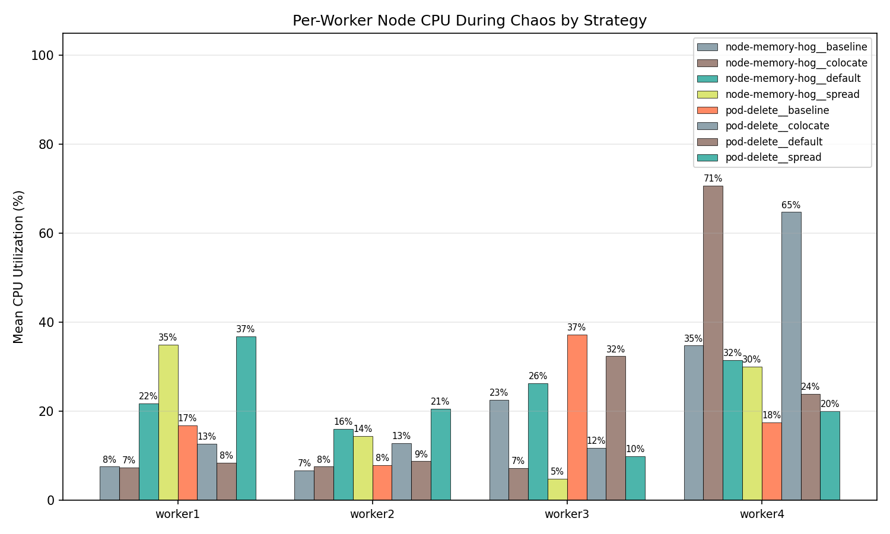

ChaosProbe — Thesis Experiment Report
Strategy Comparison Overview
| Strategy | Runs | Resilience Score | Std Dev | Range | Pass Rate | Mean Recovery (ms) | Median Recovery (ms) | P95 Recovery (ms) |
|---|---|---|---|---|---|---|---|---|
| node-memory-hog__baseline | 4 | 100.0 | ±0.0 | 100–100 | 100% | n/a | n/a | n/a |
| node-memory-hog__colocate | 4 | 95.8 | ±8.5 | 83–100 | 75% | n/a | n/a | n/a |
| node-memory-hog__default | 4 | 100.0 | ±0.0 | 100–100 | 100% | n/a | n/a | n/a |
| node-memory-hog__spread | 4 | 100.0 | ±0.0 | 100–100 | 100% | n/a | n/a | n/a |
| pod-delete__baseline | 4 | 100.0 | ±0.0 | 100–100 | 100% | n/a | n/a | n/a |
| pod-delete__colocate | 4 | 70.5 | ±25.0 | 33–83 | 0% | 2187.4 | 1996.0 | 3340.9 |
| pod-delete__default | 4 | 70.5 | ±25.0 | 33–83 | 0% | 1509.9 | 1406.1 | 2105.2 |
| pod-delete__spread | 4 | 70.5 | ±25.0 | 33–83 | 0% | 1674.4 | 1594.2 | 2102.7 |
Note: Resilience scores blend LitmusChaos probe verdicts (25%) with continuous metrics: recovery speed (25%), latency preservation (25%), error rate (15%), and throughput preservation (10%). This produces finer-grained differentiation than probe verdicts alone.


Hypothesis Evaluation
Per-Iteration Score Breakdown
| Strategy | Iter 1 | Iter 2 | Iter 3 | Iter 4 |
|---|---|---|---|---|
| node-memory-hog__baseline | 100 217.2s | 100 218.3s | 100 583.8s | 100 217.0s |
| node-memory-hog__colocate | 100 338.8s | 83 339.7s | 100 339.4s | 100 339.3s |
| node-memory-hog__default | 100 337.9s | 100 335.0s | 100 337.5s | 100 337.3s |
| node-memory-hog__spread | 100 337.0s | 100 337.2s | 100 337.5s | 100 339.6s |
| pod-delete__baseline | 100 219.1s | 100 277.4s | 100 217.1s | 100 217.9s |
| pod-delete__colocate | 33 337.1s | 83 338.2s | 83 349.4s | 83 338.7s |
| pod-delete__default | 83 335.4s | 33 336.9s | 83 335.2s | 83 339.0s |
| pod-delete__spread | 83 339.2s | 83 342.2s | 83 339.5s | 33 339.1s |
Each cell shows resilience score and iteration duration. Cells: ≥80 50–79 <50 ⚠ = pre-chaos baseline was degraded (score may reflect accumulated damage, not strategy resilience).
Placement Topology
Pod-to-node assignments per strategy. Color groups pods on the same node.
| Deployment | node-memory-hog__colocate | node-memory-hog__spread | pod-delete__colocate | pod-delete__spread |
|---|---|---|---|---|
| adservice | worker4 | worker1 | worker4 | worker1 |
| cartservice | worker4 | worker2 | worker4 | worker2 |
| checkoutservice | worker4 | worker3 | worker4 | worker3 |
| currencyservice | worker4 | worker4 | worker4 | worker4 |
| emailservice | worker4 | worker1 | worker4 | worker1 |
| frontend | worker4 | worker2 | worker4 | worker2 |
| paymentservice | worker4 | worker3 | worker4 | worker3 |
| productcatalogservice | worker4 | worker4 | worker4 | worker4 |
| recommendationservice | worker4 | worker1 | worker4 | worker1 |
| redis-cart | worker4 | worker2 | worker4 | worker2 |
| shippingservice | worker4 | worker3 | worker4 | worker3 |
Dimension 1 — Recovery Time
Time from pod deletion to pod ready, measured via the Kubernetes Watch API. Lower recovery time indicates better fault tolerance under the given placement.

Dimension 2 — Inter-Service Latency
HTTP route latency measured via kubectl exec using python3/wget probes.
Degradation from pre-chaos to during-chaos quantifies fault impact on service communication.
Inter-Service Latency
| Strategy | Route | Pre-Chaos Mean (ms) | During Chaos Mean (ms) | During Chaos P95 (ms) | During Chaos Cross-Pod Stddev (ms) | Worst Vantage Point (ms) | Post-Chaos Mean (ms) | Errors During Chaos |
|---|---|---|---|---|---|---|---|---|
| node-memory-hog__baseline | / | 121.4 | 111.7 | 149.0 | 36.7 | 801.0 | 112.5 | 0 |
| node-memory-hog__baseline | /_healthz | 72.5 | 76.9 | 105.4 | 29.2 | 195.4 | 78.8 | 0 |
| node-memory-hog__baseline | /cart | 169.2 | 130.4 | 197.2 | 34.2 | 739.9 | 135.8 | 0 |
| node-memory-hog__baseline | /product/OLJCESPC7Z | 143.1 | 175.0 | 204.7 | 63.4 | 2815.8 | 159.7 | 0 |
| node-memory-hog__baseline | cartservice->redis-cart | 8.1 | 7.2 | 42.0 | 6.6 | 84.3 | 16.7 | 0 |
| node-memory-hog__baseline | checkoutservice->cartservice,frontend->cartservice | 11.6 | 10.2 | 42.8 | 12.4 | 87.3 | 11.6 | 0 |
| node-memory-hog__baseline | checkoutservice->currencyservice,frontend->currencyservice | 11.7 | 8.9 | 41.7 | 10.7 | 88.0 | 8.9 | 0 |
| node-memory-hog__baseline | checkoutservice->emailservice | 18.9 | 11.1 | 42.8 | 13.4 | 85.6 | 9.3 | 0 |
| node-memory-hog__baseline | checkoutservice->paymentservice | 12.0 | 9.8 | 42.0 | 11.2 | 83.4 | 9.3 | 0 |
| node-memory-hog__baseline | checkoutservice->productcatalogservice,frontend->productcatalogservice,recommendationservice->productcatalogservice | 18.9 | 9.6 | 41.9 | 11.1 | 87.6 | 7.2 | 0 |
| node-memory-hog__baseline | checkoutservice->shippingservice,frontend->shippingservice | 7.2 | 8.4 | 42.3 | 9.3 | 83.6 | 14.7 | 0 |
| node-memory-hog__baseline | frontend->adservice | 11.5 | 7.2 | 40.5 | 6.5 | 83.4 | 1.8 | 0 |
| node-memory-hog__baseline | frontend->checkoutservice | 6.2 | 3.8 | 12.6 | 3.7 | 81.3 | 7.0 | 0 |
| node-memory-hog__baseline | frontend->recommendationservice | 13.8 | 13.6 | 42.4 | 15.5 | 84.8 | 4.2 | 0 |
| node-memory-hog__baseline | loadgenerator->frontend | 9.2 | 7.1 | 41.2 | 8.6 | 83.6 | 11.2 | 0 |
| node-memory-hog__colocate | / | 187.4 | 209.5 | 337.1 | 55.4 | 1281.5 | 192.3 | 0 |
| node-memory-hog__colocate | /_healthz | 125.9 | 108.5 | 157.8 | 27.4 | 201.9 | 129.1 | 0 |
| node-memory-hog__colocate | /cart | 187.0 | 185.9 | 283.1 | 36.1 | 364.8 | 187.3 | 0 |
| node-memory-hog__colocate | /product/OLJCESPC7Z | 197.7 | 210.1 | 316.1 | 36.9 | 500.9 | 198.4 | 0 |
| node-memory-hog__colocate | cartservice->redis-cart | 10.1 | 9.7 | 38.2 | 9.9 | 78.7 | 9.9 | 0 |
| node-memory-hog__colocate | checkoutservice->cartservice,frontend->cartservice | 4.1 | 8.8 +117% | 38.7 | 8.3 | 84.9 | 9.6 | 0 |
| node-memory-hog__colocate | checkoutservice->currencyservice,frontend->currencyservice | 12.3 | 8.1 | 35.1 | 7.3 | 91.0 | 17.3 | 0 |
| node-memory-hog__colocate | checkoutservice->emailservice | 13.1 | 11.1 | 42.1 | 11.5 | 83.5 | 10.2 | 0 |
| node-memory-hog__colocate | checkoutservice->paymentservice | 3.5 | 10.2 +194% | 44.4 | 9.4 | 85.7 | 6.4 | 0 |
| node-memory-hog__colocate | checkoutservice->productcatalogservice,frontend->productcatalogservice,recommendationservice->productcatalogservice | 13.5 | 8.9 | 40.1 | 8.5 | 82.7 | 8.0 | 0 |
| node-memory-hog__colocate | checkoutservice->shippingservice,frontend->shippingservice | 10.4 | 8.9 | 40.2 | 9.0 | 79.5 | 7.8 | 0 |
| node-memory-hog__colocate | frontend->adservice | 3.4 | 12.5 +267% | 42.7 | 12.6 | 83.0 | 12.6 | 0 |
| node-memory-hog__colocate | frontend->checkoutservice | 5.8 | 8.7 | 37.9 | 8.7 | 76.9 | 4.5 | 0 |
| node-memory-hog__colocate | frontend->recommendationservice | 14.5 | 8.6 | 36.6 | 7.9 | 75.1 | 7.4 | 0 |
| node-memory-hog__colocate | loadgenerator->frontend | 7.8 | 9.9 | 41.6 | 9.8 | 81.7 | 8.4 | 0 |
| node-memory-hog__default | / | 136.8 | 133.4 | 191.9 | 40.5 | 928.1 | 87.0 | 0 |
| node-memory-hog__default | /_healthz | 80.2 | 84.9 | 139.4 | 34.2 | 233.5 | 83.4 | 0 |
| node-memory-hog__default | /cart | 170.0 | 129.1 | 212.8 | 40.7 | 339.9 | 110.4 | 0 |
| node-memory-hog__default | /product/OLJCESPC7Z | 141.2 | 165.2 | 254.8 | 33.9 | 632.7 | 126.1 | 0 |
| node-memory-hog__default | cartservice->redis-cart | 9.3 | 12.0 | 42.7 | 11.7 | 85.8 | 10.9 | 0 |
| node-memory-hog__default | checkoutservice->cartservice,frontend->cartservice | 22.0 | 12.9 | 42.4 | 13.4 | 84.4 | 12.4 | 0 |
| node-memory-hog__default | checkoutservice->currencyservice,frontend->currencyservice | 9.3 | 10.9 | 42.6 | 13.4 | 86.4 | 6.6 | 0 |
| node-memory-hog__default | checkoutservice->emailservice | 19.3 | 10.3 | 42.7 | 10.5 | 89.7 | 5.5 | 0 |
| node-memory-hog__default | checkoutservice->paymentservice | 9.3 | 8.3 | 42.3 | 8.5 | 85.9 | 15.9 | 0 |
| node-memory-hog__default | checkoutservice->productcatalogservice,frontend->productcatalogservice,recommendationservice->productcatalogservice | 7.8 | 9.3 | 43.2 | 9.1 | 86.0 | 9.2 | 0 |
| node-memory-hog__default | checkoutservice->shippingservice,frontend->shippingservice | 9.5 | 11.2 | 42.9 | 11.8 | 89.5 | 10.4 | 0 |
| node-memory-hog__default | frontend->adservice | 11.7 | 8.1 | 42.4 | 9.3 | 85.6 | 13.4 | 0 |
| node-memory-hog__default | frontend->checkoutservice | 14.7 | 10.8 | 42.1 | 11.1 | 86.5 | 11.5 | 0 |
| node-memory-hog__default | frontend->recommendationservice | 13.5 | 10.8 | 42.8 | 10.4 | 85.6 | 12.4 | 0 |
| node-memory-hog__default | loadgenerator->frontend | 6.9 | 9.3 | 42.0 | 9.8 | 85.6 | 1.7 | 0 |
| node-memory-hog__spread | / | 160.1 | 109.4 | 158.0 | 34.5 | 733.8 | 136.5 | 0 |
| node-memory-hog__spread | /_healthz | 61.4 | 70.6 | 106.4 | 33.1 | 189.6 | 75.9 | 0 |
| node-memory-hog__spread | /cart | 149.7 | 123.2 | 186.1 | 30.6 | 466.5 | 114.7 | 0 |
| node-memory-hog__spread | /product/OLJCESPC7Z | 111.2 | 130.4 | 191.2 | 27.5 | 784.2 | 102.2 | 0 |
| node-memory-hog__spread | cartservice->redis-cart | 14.8 | 7.0 | 40.8 | 6.8 | 84.2 | 11.4 | 0 |
| node-memory-hog__spread | checkoutservice->cartservice,frontend->cartservice | 13.8 | 8.2 | 40.9 | 8.5 | 82.7 | 9.0 | 0 |
| node-memory-hog__spread | checkoutservice->currencyservice,frontend->currencyservice | 12.1 | 9.4 | 41.6 | 9.6 | 83.6 | 15.9 | 0 |
| node-memory-hog__spread | checkoutservice->emailservice | 6.8 | 6.2 | 39.7 | 6.7 | 83.0 | 5.2 | 0 |
| node-memory-hog__spread | checkoutservice->paymentservice | 6.2 | 9.9 +59% | 41.5 | 10.6 | 84.5 | 8.0 | 0 |
| node-memory-hog__spread | checkoutservice->productcatalogservice,frontend->productcatalogservice,recommendationservice->productcatalogservice | 6.3 | 8.4 | 41.3 | 9.9 | 83.5 | 9.1 | 0 |
| node-memory-hog__spread | checkoutservice->shippingservice,frontend->shippingservice | 9.2 | 9.1 | 42.2 | 10.7 | 85.5 | 7.7 | 0 |
| node-memory-hog__spread | frontend->adservice | 10.0 | 8.3 | 40.3 | 8.9 | 82.5 | 9.1 | 0 |
| node-memory-hog__spread | frontend->checkoutservice | 12.1 | 10.4 | 41.2 | 10.0 | 83.6 | 8.4 | 0 |
| node-memory-hog__spread | frontend->recommendationservice | 11.1 | 5.2 | 38.8 | 6.3 | 83.3 | 4.4 | 0 |
| node-memory-hog__spread | loadgenerator->frontend | 8.1 | 6.5 | 41.3 | 7.2 | 85.3 | 8.5 | 0 |
| pod-delete__baseline | / | 127.4 | 139.2 | 220.9 | 44.4 | 401.7 | 152.2 | 0 |
| pod-delete__baseline | /_healthz | 75.4 | 83.3 | 105.2 | 22.5 | 195.6 | 76.1 | 0 |
| pod-delete__baseline | /cart | 131.9 | 143.7 | 209.3 | 39.9 | 895.4 | 127.6 | 0 |
| pod-delete__baseline | /product/OLJCESPC7Z | 149.7 | 166.2 | 239.5 | 37.1 | 402.0 | 301.0 | 0 |
| pod-delete__baseline | cartservice->redis-cart | 14.6 | 6.7 | 40.4 | 7.5 | 83.7 | 10.3 | 0 |
| pod-delete__baseline | checkoutservice->cartservice,frontend->cartservice | 7.3 | 11.1 +51% | 42.7 | 13.3 | 89.3 | 7.8 | 0 |
| pod-delete__baseline | checkoutservice->currencyservice,frontend->currencyservice | 12.9 | 8.9 | 42.2 | 9.1 | 90.5 | 2.5 | 0 |
| pod-delete__baseline | checkoutservice->emailservice | 4.5 | 9.8 +117% | 41.6 | 12.5 | 83.0 | 4.3 | 0 |
| pod-delete__baseline | checkoutservice->paymentservice | 7.1 | 15.3 +115% | 44.6 | 16.7 | 90.4 | 10.8 | 0 |
| pod-delete__baseline | checkoutservice->productcatalogservice,frontend->productcatalogservice,recommendationservice->productcatalogservice | 9.3 | 9.8 | 42.0 | 11.7 | 86.9 | 4.8 | 0 |
| pod-delete__baseline | checkoutservice->shippingservice,frontend->shippingservice | 2.2 | 12.3 +450% | 42.5 | 15.2 | 83.9 | 6.3 | 0 |
| pod-delete__baseline | frontend->adservice | 15.2 | 8.1 | 40.9 | 10.3 | 85.8 | 15.1 | 0 |
| pod-delete__baseline | frontend->checkoutservice | 11.7 | 16.2 | 42.2 | 18.9 | 87.3 | 7.7 | 0 |
| pod-delete__baseline | frontend->recommendationservice | 6.8 | 6.9 | 40.2 | 8.4 | 83.7 | 10.3 | 0 |
| pod-delete__baseline | loadgenerator->frontend | 6.5 | 13.7 +112% | 43.8 | 14.2 | 89.9 | 8.1 | 0 |
| pod-delete__colocate | / | 184.4 | 210.2 | 275.7 | 114.9 | 4615.1 | 134.5 | 5 |
| pod-delete__colocate | /_healthz | 109.7 | 103.5 | 156.1 | 28.9 | 204.5 | 89.8 | 0 |
| pod-delete__colocate | /cart | 184.8 | 260.2 | 450.8 | 57.4 | 3640.0 | 142.9 | 0 |
| pod-delete__colocate | /product/OLJCESPC7Z | 191.0 | 221.2 | 380.3 | 29.9 | 1203.9 | 159.9 | 4 |
| pod-delete__colocate | cartservice->redis-cart | 8.8 | 9.1 | 39.2 | 10.0 | 82.1 | 8.1 | 0 |
| pod-delete__colocate | checkoutservice->cartservice,frontend->cartservice | 14.6 | 10.7 | 39.4 | 10.9 | 83.3 | 8.1 | 0 |
| pod-delete__colocate | checkoutservice->currencyservice,frontend->currencyservice | 14.6 | 10.1 | 41.6 | 11.1 | 85.7 | 5.1 | 0 |
| pod-delete__colocate | checkoutservice->emailservice | 13.6 | 10.3 | 38.2 | 11.1 | 79.3 | 18.9 | 0 |
| pod-delete__colocate | checkoutservice->paymentservice | 4.1 | 7.1 +73% | 36.3 | 7.2 | 75.2 | 11.9 | 0 |
| pod-delete__colocate | checkoutservice->productcatalogservice,frontend->productcatalogservice,recommendationservice->productcatalogservice | 14.2 | 5.7 | 21.0 | 4.6 | 74.2 | 9.6 | 2 |
| pod-delete__colocate | checkoutservice->shippingservice,frontend->shippingservice | 12.4 | 15.3 | 39.4 | 17.0 | 550.6 | 12.8 | 0 |
| pod-delete__colocate | frontend->adservice | 8.9 | 11.9 | 41.9 | 12.5 | 84.8 | 4.6 | 0 |
| pod-delete__colocate | frontend->checkoutservice | 7.3 | 7.4 | 40.9 | 7.7 | 97.5 | 4.7 | 0 |
| pod-delete__colocate | frontend->recommendationservice | 8.1 | 13.4 +66% | 42.2 | 13.9 | 81.0 | 10.3 | 0 |
| pod-delete__colocate | loadgenerator->frontend | 6.3 | 6.9 | 38.3 | 8.1 | 81.7 | 11.2 | 0 |
| pod-delete__default | / | 91.7 | 188.1 +105% | 225.8 | 39.7 | 3406.7 | 82.9 | 2 |
| pod-delete__default | /_healthz | 61.3 | 62.6 | 99.6 | 28.8 | 188.1 | 90.4 | 0 |
| pod-delete__default | /cart | 131.4 | 141.8 | 163.6 | 36.7 | 1511.5 | 144.1 | 0 |
| pod-delete__default | /product/OLJCESPC7Z | 134.0 | 232.5 +73% | 270.7 | 37.4 | 3589.0 | 150.8 | 2 |
| pod-delete__default | cartservice->redis-cart | 10.4 | 10.6 | 43.0 | 10.7 | 86.2 | 16.6 | 0 |
| pod-delete__default | checkoutservice->cartservice,frontend->cartservice | 11.1 | 11.4 | 42.3 | 12.9 | 83.9 | 11.8 | 0 |
| pod-delete__default | checkoutservice->currencyservice,frontend->currencyservice | 8.8 | 9.6 | 41.6 | 11.5 | 82.3 | 1.8 | 0 |
| pod-delete__default | checkoutservice->emailservice | 8.8 | 12.0 | 42.1 | 12.1 | 83.7 | 4.3 | 0 |
| pod-delete__default | checkoutservice->paymentservice | 13.0 | 7.1 | 41.5 | 6.9 | 83.4 | 14.0 | 0 |
| pod-delete__default | checkoutservice->productcatalogservice,frontend->productcatalogservice,recommendationservice->productcatalogservice | 4.4 | 13.9 +215% | 42.8 | 16.9 | 86.0 | 8.4 | 0 |
| pod-delete__default | checkoutservice->shippingservice,frontend->shippingservice | 9.4 | 16.1 +72% | 42.6 | 18.7 | 83.9 | 11.7 | 0 |
| pod-delete__default | frontend->adservice | 13.6 | 9.9 | 41.8 | 12.1 | 83.2 | 21.0 | 0 |
| pod-delete__default | frontend->checkoutservice | 9.7 | 10.3 | 42.3 | 9.8 | 83.9 | 6.7 | 0 |
| pod-delete__default | frontend->recommendationservice | 18.8 | 10.8 | 41.7 | 13.2 | 83.7 | 11.8 | 0 |
| pod-delete__default | loadgenerator->frontend | 14.4 | 11.0 | 41.8 | 12.7 | 84.3 | 6.4 | 0 |
| pod-delete__spread | / | 143.9 | 225.3 +57% | 381.5 | 89.5 | 3444.9 | 210.1 | 0 |
| pod-delete__spread | /_healthz | 80.2 | 113.8 | 179.4 | 35.5 | 293.6 | 175.1 | 0 |
| pod-delete__spread | /cart | 120.9 | 253.6 +110% | 420.7 | 84.4 | 3022.7 | 265.4 | 0 |
| pod-delete__spread | /product/OLJCESPC7Z | 170.2 | 320.2 +88% | 851.0 | 37.8 | 3134.8 | 253.4 | 0 |
| pod-delete__spread | cartservice->redis-cart | 7.1 | 13.2 +87% | 43.8 | 15.7 | 88.9 | 18.3 | 0 |
| pod-delete__spread | checkoutservice->cartservice,frontend->cartservice | 6.8 | 9.9 | 42.0 | 10.7 | 89.0 | 5.4 | 0 |
| pod-delete__spread | checkoutservice->currencyservice,frontend->currencyservice | 6.6 | 12.7 +94% | 43.1 | 15.0 | 91.9 | 28.4 | 0 |
| pod-delete__spread | checkoutservice->emailservice | 8.5 | 6.4 | 41.6 | 7.0 | 82.7 | 13.5 | 0 |
| pod-delete__spread | checkoutservice->paymentservice | 7.0 | 11.1 +59% | 43.7 | 11.7 | 85.7 | 17.2 | 0 |
| pod-delete__spread | checkoutservice->productcatalogservice,frontend->productcatalogservice,recommendationservice->productcatalogservice | 17.0 | 41.0 +141% | 49.7 | 52.3 | 3033.4 | 18.9 | 1 |
| pod-delete__spread | checkoutservice->shippingservice,frontend->shippingservice | 4.6 | 12.0 +161% | 45.8 | 10.3 | 88.9 | 13.4 | 0 |
| pod-delete__spread | frontend->adservice | 6.8 | 9.2 | 42.2 | 11.3 | 89.0 | 12.9 | 0 |
| pod-delete__spread | frontend->checkoutservice | 6.5 | 10.9 +67% | 42.5 | 12.5 | 89.4 | 21.7 | 0 |
| pod-delete__spread | frontend->recommendationservice | 8.1 | 7.8 | 40.9 | 7.3 | 86.3 | 11.9 | 0 |
| pod-delete__spread | loadgenerator->frontend | 10.1 | 12.3 | 43.2 | 14.6 | 87.4 | 13.6 | 0 |


Dimension 3 — Resource Utilization
Node-level CPU and memory utilization from the Kubernetes Metrics API. Only nodes hosting namespace pods are included — idle nodes are excluded so placement strategies produce distinct resource profiles. Higher utilization during chaos correlates with resource contention from co-location.
Node Resource Utilization (Used Nodes Only)
| Strategy | Phase | Mean CPU (%) | CPU Stddev (%) | Peak Node CPU (%) | Mean Memory (%) | Mem Stddev (%) | Peak Node Mem (%) | Samples |
|---|---|---|---|---|---|---|---|---|
| node-memory-hog__baseline (4 used) | pre-chaos | 15.8 | 2.9 | 38.6 | 62.9 | 0.2 | 73.5 | 13 |
| node-memory-hog__baseline (4 used) | during-chaos | 17.9 | 3.5 | 41.8 | 63.6 | 0.3 | 73.6 | 42 |
| node-memory-hog__baseline (4 used) | post-chaos | 15.9 | 0.3 | 33.5 | 63.4 | 0.1 | 73.7 | 12 |
| node-memory-hog__colocate (4 used) | pre-chaos | 19.2 | 1.9 | 66.1 | 63.3 | 0.1 | 74.3 | 13 |
| node-memory-hog__colocate (4 used) | during-chaos | 23.3 | 3.2 | 87.4 | 63.5 | 0.3 | 74.3 | 66 |
| node-memory-hog__colocate (4 used) | post-chaos | 20.0 | 1.0 | 64.0 | 62.9 | 0.1 | 71.2 | 11 |
| node-memory-hog__default (4 used) | pre-chaos | 16.4 | 2.7 | 33.0 | 63.7 | 0.1 | 73.7 | 13 |
| node-memory-hog__default (4 used) | during-chaos | 23.9 | 7.7 | 65.8 | 64.6 | 0.6 | 74.2 | 66 |
| node-memory-hog__default (4 used) | post-chaos | 17.4 | 0.7 | 32.4 | 63.9 | 0.1 | 74.2 | 12 |
| node-memory-hog__spread (4 used) | pre-chaos | 14.6 | 2.4 | 34.1 | 63.4 | 0.1 | 67.0 | 13 |
| node-memory-hog__spread (4 used) | during-chaos | 21.1 | 6.3 | 62.3 | 64.6 | 0.9 | 75.0 | 66 |
| node-memory-hog__spread (4 used) | post-chaos | 15.9 | 1.8 | 38.5 | 63.6 | 0.0 | 66.5 | 12 |
| pod-delete__baseline (4 used) | pre-chaos | 16.1 | 1.1 | 36.9 | 63.4 | 0.1 | 68.3 | 13 |
| pod-delete__baseline (4 used) | during-chaos | 19.9 | 3.6 | 48.6 | 63.5 | 0.7 | 70.8 | 54 |
| pod-delete__baseline (4 used) | post-chaos | 19.9 | 6.4 | 45.7 | 62.6 | 0.1 | 69.4 | 11 |
| pod-delete__colocate (4 used) | pre-chaos | 20.5 | 4.7 | 69.2 | 63.3 | 0.1 | 76.3 | 13 |
| pod-delete__colocate (4 used) | during-chaos | 25.6 | 7.2 | 79.1 | 63.7 | 0.2 | 76.5 | 64 |
| pod-delete__colocate (4 used) | post-chaos | 18.0 | 1.4 | 58.7 | 63.2 | 0.1 | 75.9 | 12 |
| pod-delete__default (4 used) | pre-chaos | 15.0 | 1.7 | 31.1 | 63.4 | 0.1 | 75.6 | 13 |
| pod-delete__default (4 used) | during-chaos | 18.4 | 4.3 | 44.3 | 63.9 | 0.1 | 75.7 | 66 |
| pod-delete__default (4 used) | post-chaos | 16.5 | 0.7 | 31.8 | 63.8 | 0.1 | 75.4 | 12 |
| pod-delete__spread (4 used) | pre-chaos | 16.0 | 0.6 | 36.6 | 63.9 | 0.1 | 71.4 | 12 |
| pod-delete__spread (4 used) | during-chaos | 21.9 | 4.9 | 51.6 | 64.5 | 0.2 | 72.5 | 66 |
| pod-delete__spread (4 used) | post-chaos | 22.5 | 2.4 | 38.6 | 64.1 | 0.1 | 71.7 | 11 |
Note: Metrics are computed only for nodes that host at least one namespace pod. Idle nodes are excluded so placement strategies (colocate vs spread) produce visibly different resource profiles.
Per-Worker Node CPU During Chaos
| Strategy | Worker Node | Mean CPU (%) | Max CPU (%) | Mean Memory (%) |
|---|---|---|---|---|
| node-memory-hog__baseline | worker1 | 7.6 | 26.0 | 59.5 |
| node-memory-hog__baseline | worker2 | 6.7 | 24.9 | 60.5 |
| node-memory-hog__baseline | worker3 | 22.6 | 38.0 | 61.1 |
| node-memory-hog__baseline | worker4 | 34.8 | 41.8 | 73.5 |
| node-memory-hog__colocate | worker1 | 7.4 | 10.5 | 60.3 |
| node-memory-hog__colocate | worker2 | 7.6 | 10.4 | 60.6 |
| node-memory-hog__colocate | worker3 | 7.3 | 12.9 | 60.4 |
| node-memory-hog__colocate | worker4 | 70.7 | 87.4 | 72.8 |
| node-memory-hog__default | worker1 | 21.8 | 38.2 | 60.9 |
| node-memory-hog__default | worker2 | 16.1 | 34.9 | 60.6 |
| node-memory-hog__default | worker3 | 26.3 | 65.8 | 63.1 |
| node-memory-hog__default | worker4 | 31.5 | 47.1 | 73.9 |
| node-memory-hog__spread | worker1 | 35.0 | 40.4 | 64.8 |
| node-memory-hog__spread | worker2 | 14.5 | 18.3 | 62.4 |
| node-memory-hog__spread | worker3 | 4.9 | 8.8 | 61.4 |
| node-memory-hog__spread | worker4 | 30.1 | 62.3 | 69.7 |
| pod-delete__baseline | worker1 | 16.9 | 33.2 | 57.8 |
| pod-delete__baseline | worker2 | 7.9 | 23.8 | 61.7 |
| pod-delete__baseline | worker3 | 37.3 | 48.6 | 64.4 |
| pod-delete__baseline | worker4 | 17.5 | 26.2 | 70.1 |
| pod-delete__colocate | worker1 | 12.7 | 35.9 | 58.1 |
| pod-delete__colocate | worker2 | 12.9 | 35.2 | 59.5 |
| pod-delete__colocate | worker3 | 11.8 | 32.5 | 61.2 |
| pod-delete__colocate | worker4 | 64.8 | 79.1 | 76.1 |
| pod-delete__default | worker1 | 8.5 | 24.5 | 56.3 |
| pod-delete__default | worker2 | 8.8 | 24.7 | 60.4 |
| pod-delete__default | worker3 | 32.4 | 44.3 | 63.3 |
| pod-delete__default | worker4 | 23.9 | 36.8 | 75.3 |
| pod-delete__spread | worker1 | 36.9 | 51.6 | 62.3 |
| pod-delete__spread | worker2 | 20.6 | 38.2 | 61.6 |
| pod-delete__spread | worker3 | 9.9 | 27.1 | 61.8 |
| pod-delete__spread | worker4 | 20.1 | 35.3 | 72.2 |
Key insight: Under colocate, one worker absorbs all application CPU while others remain idle. The cluster-wide mean hides this hot-node effect. Under spread, load distributes more evenly across workers.



Dimension 4 — I/O Throughput
Redis ops/s and sequential disk read/write bandwidth measured via
redis-cli and dd. Throughput degradation during chaos
reflects shared I/O contention on co-located nodes.
I/O Throughput
| Strategy | Operation | Pre-Chaos Ops/s | During Chaos Ops/s | During Chaos Latency (ms) | During Chaos Bandwidth | During Chaos Cross-Node Stddev (ops/s) | Worst Node Min (ops/s) | Post-Chaos Ops/s |
|---|---|---|---|---|---|---|---|---|
| node-memory-hog__baseline | redis-read | 12239.6 | 15393.7 | 1.18 | n/a | n/a | n/a | 11302.5 |
| node-memory-hog__baseline | redis-write | 19206.1 | 18321.6 | 1.08 | n/a | n/a | n/a | 16205.5 |
| node-memory-hog__baseline | disk-read | 26000.7 | 29729.1 | 0.04 | 1858.1 MB/s | 0.0 | 6458.3 | 31641.0 |
| node-memory-hog__baseline | disk-write | 678.9 | 725.7 | 1.71 | 45.4 MB/s | 0.0 | 254.8 | 846.5 |
| node-memory-hog__colocate | redis-read | 4057.1 | 4280.6 | 4.61 | n/a | n/a | n/a | 5675.1 |
| node-memory-hog__colocate | redis-write | 2605.2 | 2806.8 | 5.04 | n/a | n/a | n/a | 2102.1 |
| node-memory-hog__colocate | disk-read | 18923.7 | 16644.9 | 0.09 | 1040.3 MB/s | 0.0 | 3991.4 | 24907.6 |
| node-memory-hog__colocate | disk-write | 642.1 | 614.0 | 1.68 | 38.4 MB/s | 0.0 | 330.6 | 649.9 |
| node-memory-hog__default | redis-read | 17293.8 | 16679.9 | 1.01 | n/a | n/a | n/a | 19360.3 |
| node-memory-hog__default | redis-write | 11467.7 | 15279.3 | 0.82 | n/a | n/a | n/a | 14355.8 |
| node-memory-hog__default | disk-read | 34063.9 | 27356.7 | 0.05 | 1709.8 MB/s | 0.0 | 6018.7 | 30252.2 |
| node-memory-hog__default | disk-write | 937.0 | 827.1 | 1.39 | 51.7 MB/s | 0.0 | 236.3 | 827.8 |
| node-memory-hog__spread | redis-read | 22368.8 | 24923.9 | 0.59 | n/a | n/a | n/a | 18910.2 |
| node-memory-hog__spread | redis-write | 19946.3 | 24092.7 | 0.53 | n/a | n/a | n/a | 24483.2 |
| node-memory-hog__spread | disk-read | 31670.6 | 29228.6 | 0.05 | 1826.8 MB/s | 0.0 | 6319.6 | 39995.1 |
| node-memory-hog__spread | disk-write | 812.9 | 844.7 | 1.27 | 52.8 MB/s | 0.0 | 292.0 | 858.5 |
| pod-delete__baseline | redis-read | 13872.7 | 18351.4 | 0.82 | n/a | n/a | n/a | 5775.9 |
| pod-delete__baseline | redis-write | 15314.4 | 24480.4 | 0.80 | n/a | n/a | n/a | 15314.6 |
| pod-delete__baseline | disk-read | 30586.5 | 33020.8 | 0.04 | 2063.8 MB/s | 10037.5 | 6836.2 | 35976.8 |
| pod-delete__baseline | disk-write | 5347.2 | 4676.6 | 0.81 | 292.3 MB/s | 5591.6 | 352.5 | 5370.3 |
| pod-delete__colocate | redis-read | 2477.0 | 5441.3 | 5.40 | n/a | n/a | n/a | 3099.4 |
| pod-delete__colocate | redis-write | 10362.2 | 4387.3 -58% | 6.56 | n/a | n/a | n/a | 5138.5 |
| pod-delete__colocate | disk-read | 19062.9 | 23700.0 | 0.06 | 1481.3 MB/s | 0.0 | 6490.8 | 23345.3 |
| pod-delete__colocate | disk-write | 592.8 | 667.9 | 1.57 | 41.7 MB/s | 0.0 | 308.5 | 806.2 |
| pod-delete__default | redis-read | 23197.5 | 28976.3 | 0.59 | n/a | n/a | n/a | 18152.9 |
| pod-delete__default | redis-write | 11696.6 | 32886.9 | 0.56 | n/a | n/a | n/a | 33113.2 |
| pod-delete__default | disk-read | 32901.4 | 34052.0 | 0.04 | 2128.2 MB/s | 12193.7 | 6121.8 | 33559.9 |
| pod-delete__default | disk-write | 4716.9 | 4396.9 | 0.82 | 274.8 MB/s | 5229.2 | 434.3 | 5239.1 |
| pod-delete__spread | redis-read | 36142.7 | 8658.0 -76% | 1.18 | n/a | n/a | n/a | 2044.1 |
| pod-delete__spread | redis-write | 11739.7 | 21955.3 | 0.97 | n/a | n/a | n/a | 12038.1 |
| pod-delete__spread | disk-read | 13784.2 | 23311.8 | 0.06 | 1457.0 MB/s | 0.0 | 4257.0 | 22856.3 |
| pod-delete__spread | disk-write | 637.7 | 639.6 | 1.67 | 40.0 MB/s | 0.0 | 312.4 | 569.7 |


Supplementary — Prometheus Cluster Metrics
Pod readiness, CPU throttling, memory working set, and network receive bytes collected via PromQL. These metrics supplement the primary four dimensions.
Prometheus Cluster Metrics
| Strategy | Metric | Phase | Mean | Max | Samples |
|---|---|---|---|---|---|
| node-memory-hog__baseline | apiserver_inflight | pre-chaos | 2.1429 | 4.0000 | 7 |
| node-memory-hog__baseline | apiserver_inflight | during-chaos | 4.4000 | 21.0000 | 20 |
| node-memory-hog__baseline | apiserver_inflight | post-chaos | 1.3333 | 2.0000 | 6 |
| node-memory-hog__baseline | apiserver_request_p99 | pre-chaos | 0.5663 | 0.5684 | 7 |
| node-memory-hog__baseline | apiserver_request_p99 | during-chaos | 0.5763 | 0.5855 | 20 |
| node-memory-hog__baseline | apiserver_request_p99 | post-chaos | 0.5837 | 0.5856 | 6 |
| node-memory-hog__baseline | conntrack_entries_per_node | pre-chaos | 7421.0000 | 8959.0000 | 7 |
| node-memory-hog__baseline | conntrack_entries_per_node | during-chaos | 8768.7000 | 10725.0000 | 20 |
| node-memory-hog__baseline | conntrack_entries_per_node | post-chaos | 7957.8333 | 8596.0000 | 6 |
| node-memory-hog__baseline | container_oom_events_per_pod | pre-chaos | 0.0000 | 0.0000 | 7 |
| node-memory-hog__baseline | container_oom_events_per_pod | during-chaos | 0.0000 | 0.0000 | 20 |
| node-memory-hog__baseline | container_oom_events_per_pod | post-chaos | 0.0000 | 0.0000 | 6 |
| node-memory-hog__baseline | coredns_cache_hit_rate_per_sec | pre-chaos | 386.4635 | 644.6444 | 7 |
| node-memory-hog__baseline | coredns_cache_hit_rate_per_sec | during-chaos | 55.0070 | 71.3556 | 20 |
| node-memory-hog__baseline | coredns_cache_hit_rate_per_sec | post-chaos | 49.7889 | 50.9778 | 6 |
| node-memory-hog__baseline | coredns_cache_miss_rate_per_sec | pre-chaos | 8.5873 | 10.9112 | 7 |
| node-memory-hog__baseline | coredns_cache_miss_rate_per_sec | during-chaos | 12.6768 | 14.5111 | 20 |
| node-memory-hog__baseline | coredns_cache_miss_rate_per_sec | post-chaos | 12.0778 | 12.7333 | 6 |
| node-memory-hog__baseline | coredns_request_count_per_sec | pre-chaos | 395.0508 | 652.1998 | 7 |
| node-memory-hog__baseline | coredns_request_count_per_sec | during-chaos | 67.6980 | 84.6222 | 20 |
| node-memory-hog__baseline | coredns_request_count_per_sec | post-chaos | 61.8667 | 63.3111 | 6 |
| node-memory-hog__baseline | coredns_request_duration_p99 | pre-chaos | 0.0017 | 0.0017 | 7 |
| node-memory-hog__baseline | coredns_request_duration_p99 | during-chaos | 0.0018 | 0.0019 | 20 |
| node-memory-hog__baseline | coredns_request_duration_p99 | post-chaos | 0.0026 | 0.0028 | 6 |
| node-memory-hog__baseline | cpu_throttling | pre-chaos | 1.9431 | 1.9902 | 7 |
| node-memory-hog__baseline | cpu_throttling | during-chaos | 2.0279 | 2.4041 | 20 |
| node-memory-hog__baseline | cpu_throttling | post-chaos | 2.5410 | 2.5861 | 6 |
| node-memory-hog__baseline | cpu_usage | pre-chaos | 0.5406 | 0.5535 | 7 |
| node-memory-hog__baseline | cpu_usage | during-chaos | 0.5655 | 0.6612 | 20 |
| node-memory-hog__baseline | cpu_usage | post-chaos | 0.6700 | 0.6787 | 6 |
| node-memory-hog__baseline | kubelet_pleg_relist_duration_p99 | pre-chaos | 0.2125 | 0.2369 | 7 |
| node-memory-hog__baseline | kubelet_pleg_relist_duration_p99 | during-chaos | 0.2152 | 0.2975 | 20 |
| node-memory-hog__baseline | kubelet_pleg_relist_duration_p99 | post-chaos | 0.0795 | 0.2176 | 6 |
| node-memory-hog__baseline | kubelet_pod_start_p99 | pre-chaos | 4.7747 | 4.8063 | 7 |
| node-memory-hog__baseline | kubelet_pod_start_p99 | during-chaos | 4.7668 | 4.8375 | 20 |
| node-memory-hog__baseline | kubelet_pod_start_p99 | post-chaos | 4.6517 | 4.6625 | 6 |
| node-memory-hog__baseline | kubelet_runtime_ops_p99 | pre-chaos | 55.5354 | 55.8590 | 7 |
| node-memory-hog__baseline | kubelet_runtime_ops_p99 | during-chaos | 44.3956 | 55.5232 | 20 |
| node-memory-hog__baseline | kubelet_runtime_ops_p99 | post-chaos | 52.6781 | 53.1028 | 6 |
| node-memory-hog__baseline | memory_usage | pre-chaos | 772902912.0000 | 796770304.0000 | 7 |
| node-memory-hog__baseline | memory_usage | during-chaos | 691375923.2000 | 813928448.0000 | 20 |
| node-memory-hog__baseline | memory_usage | post-chaos | 438395562.6667 | 446943232.0000 | 6 |
| node-memory-hog__baseline | network_packets | pre-chaos | 1278.7479 | 1343.7456 | 7 |
| node-memory-hog__baseline | network_packets | during-chaos | 1377.9135 | 1628.4578 | 20 |
| node-memory-hog__baseline | network_packets | post-chaos | 1489.6259 | 1549.0323 | 6 |
| node-memory-hog__baseline | network_receive_bytes | pre-chaos | 199495.4909 | 214452.4386 | 7 |
| node-memory-hog__baseline | network_receive_bytes | during-chaos | 221599.2222 | 256989.6237 | 20 |
| node-memory-hog__baseline | network_receive_bytes | post-chaos | 215275.6494 | 230984.8016 | 6 |
| node-memory-hog__baseline | network_transmit_bytes | pre-chaos | 185928.9160 | 194359.2805 | 7 |
| node-memory-hog__baseline | network_transmit_bytes | during-chaos | 201856.7129 | 235515.3790 | 20 |
| node-memory-hog__baseline | network_transmit_bytes | post-chaos | 201234.8761 | 216216.0804 | 6 |
| node-memory-hog__baseline | node_cpu_pressure_some_per_node | pre-chaos | 1.0423 | 1.0706 | 7 |
| node-memory-hog__baseline | node_cpu_pressure_some_per_node | during-chaos | 1.1262 | 1.3009 | 20 |
| node-memory-hog__baseline | node_cpu_pressure_some_per_node | post-chaos | 1.3212 | 1.3312 | 6 |
| node-memory-hog__baseline | node_io_pressure_some_per_node | pre-chaos | 0.0232 | 0.0237 | 7 |
| node-memory-hog__baseline | node_io_pressure_some_per_node | during-chaos | 0.0233 | 0.0249 | 20 |
| node-memory-hog__baseline | node_io_pressure_some_per_node | post-chaos | 0.0227 | 0.0228 | 6 |
| node-memory-hog__baseline | node_memory_pressure_some_per_node | pre-chaos | 0.0005 | 0.0006 | 7 |
| node-memory-hog__baseline | node_memory_pressure_some_per_node | during-chaos | 0.0004 | 0.0005 | 20 |
| node-memory-hog__baseline | node_memory_pressure_some_per_node | post-chaos | 0.0001 | 0.0001 | 6 |
| node-memory-hog__baseline | pod_ready_count | pre-chaos | 14.0000 | 14.0000 | 7 |
| node-memory-hog__baseline | pod_ready_count | during-chaos | 17.4500 | 21.0000 | 20 |
| node-memory-hog__baseline | pod_ready_count | post-chaos | 14.0000 | 14.0000 | 6 |
| node-memory-hog__baseline | tcp_retransmit_rate_per_node | pre-chaos | 0.5619 | 0.7778 | 7 |
| node-memory-hog__baseline | tcp_retransmit_rate_per_node | during-chaos | 0.6144 | 0.8889 | 20 |
| node-memory-hog__baseline | tcp_retransmit_rate_per_node | post-chaos | 0.4926 | 0.6222 | 6 |
| node-memory-hog__colocate | apiserver_inflight | pre-chaos | 2.1667 | 3.0000 | 6 |
| node-memory-hog__colocate | apiserver_inflight | during-chaos | 2.5625 | 4.0000 | 32 |
| node-memory-hog__colocate | apiserver_inflight | post-chaos | 2.3333 | 4.0000 | 6 |
| node-memory-hog__colocate | apiserver_request_p99 | pre-chaos | 0.6734 | 0.6975 | 6 |
| node-memory-hog__colocate | apiserver_request_p99 | during-chaos | 0.8717 | 0.9547 | 32 |
| node-memory-hog__colocate | apiserver_request_p99 | post-chaos | 0.9564 | 0.9584 | 6 |
| node-memory-hog__colocate | conntrack_entries_per_node | pre-chaos | 5202.3333 | 6415.0000 | 6 |
| node-memory-hog__colocate | conntrack_entries_per_node | during-chaos | 5907.1250 | 7560.0000 | 32 |
| node-memory-hog__colocate | conntrack_entries_per_node | post-chaos | 5195.3333 | 5754.0000 | 6 |
| node-memory-hog__colocate | container_oom_events_per_pod | pre-chaos | 0.0000 | 0.0000 | 6 |
| node-memory-hog__colocate | container_oom_events_per_pod | during-chaos | 0.0000 | 0.0000 | 32 |
| node-memory-hog__colocate | container_oom_events_per_pod | post-chaos | 0.0000 | 0.0000 | 6 |
| node-memory-hog__colocate | coredns_cache_hit_rate_per_sec | pre-chaos | 285.3593 | 416.2667 | 6 |
| node-memory-hog__colocate | coredns_cache_hit_rate_per_sec | during-chaos | 50.9987 | 63.9333 | 32 |
| node-memory-hog__colocate | coredns_cache_hit_rate_per_sec | post-chaos | 37.9214 | 39.0222 | 6 |
| node-memory-hog__colocate | coredns_cache_miss_rate_per_sec | pre-chaos | 5.3370 | 6.7556 | 6 |
| node-memory-hog__colocate | coredns_cache_miss_rate_per_sec | during-chaos | 9.6076 | 11.4443 | 32 |
| node-memory-hog__colocate | coredns_cache_miss_rate_per_sec | post-chaos | 7.5147 | 8.1772 | 6 |
| node-memory-hog__colocate | coredns_request_count_per_sec | pre-chaos | 290.6962 | 421.9331 | 6 |
| node-memory-hog__colocate | coredns_request_count_per_sec | during-chaos | 60.5465 | 73.9334 | 32 |
| node-memory-hog__colocate | coredns_request_count_per_sec | post-chaos | 45.4361 | 46.8222 | 6 |
| node-memory-hog__colocate | coredns_request_duration_p99 | pre-chaos | 0.0037 | 0.0040 | 6 |
| node-memory-hog__colocate | coredns_request_duration_p99 | during-chaos | 0.0049 | 0.0071 | 32 |
| node-memory-hog__colocate | coredns_request_duration_p99 | post-chaos | 0.0071 | 0.0072 | 6 |
| node-memory-hog__colocate | cpu_throttling | pre-chaos | 1.2386 | 1.3441 | 6 |
| node-memory-hog__colocate | cpu_throttling | during-chaos | 1.7121 | 2.1619 | 32 |
| node-memory-hog__colocate | cpu_throttling | post-chaos | 2.1356 | 2.1962 | 6 |
| node-memory-hog__colocate | cpu_usage | pre-chaos | 0.3326 | 0.3536 | 6 |
| node-memory-hog__colocate | cpu_usage | during-chaos | 0.7109 | 0.9491 | 32 |
| node-memory-hog__colocate | cpu_usage | post-chaos | 0.9205 | 0.9422 | 6 |
| node-memory-hog__colocate | kubelet_pleg_relist_duration_p99 | pre-chaos | 0.0343 | 0.0343 | 6 |
| node-memory-hog__colocate | kubelet_pleg_relist_duration_p99 | during-chaos | 0.0242 | 0.0343 | 32 |
| node-memory-hog__colocate | kubelet_pleg_relist_duration_p99 | post-chaos | 0.0238 | 0.0241 | 6 |
| node-memory-hog__colocate | kubelet_pod_start_p99 | pre-chaos | 6.6000 | 6.6000 | 6 |
| node-memory-hog__colocate | kubelet_pod_start_p99 | during-chaos | 5.3280 | 7.8496 | 32 |
| node-memory-hog__colocate | kubelet_pod_start_p99 | post-chaos | 4.7458 | 4.8000 | 6 |
| node-memory-hog__colocate | kubelet_runtime_ops_p99 | pre-chaos | 30.0456 | 30.0905 | 6 |
| node-memory-hog__colocate | kubelet_runtime_ops_p99 | during-chaos | 48.7157 | 63.5850 | 32 |
| node-memory-hog__colocate | kubelet_runtime_ops_p99 | post-chaos | 56.0285 | 56.4740 | 6 |
| node-memory-hog__colocate | memory_usage | pre-chaos | 1018596010.6667 | 1042870272.0000 | 6 |
| node-memory-hog__colocate | memory_usage | during-chaos | 617022720.0000 | 920227840.0000 | 32 |
| node-memory-hog__colocate | memory_usage | post-chaos | 576935936.0000 | 588754944.0000 | 6 |
| node-memory-hog__colocate | network_packets | pre-chaos | 483.8157 | 525.5922 | 6 |
| node-memory-hog__colocate | network_packets | during-chaos | 1075.7697 | 1382.6594 | 32 |
| node-memory-hog__colocate | network_packets | post-chaos | 1266.3527 | 1293.2281 | 6 |
| node-memory-hog__colocate | network_receive_bytes | pre-chaos | 83157.7612 | 89504.1302 | 6 |
| node-memory-hog__colocate | network_receive_bytes | during-chaos | 171843.7357 | 223112.0523 | 32 |
| node-memory-hog__colocate | network_receive_bytes | post-chaos | 188263.5881 | 193846.4513 | 6 |
| node-memory-hog__colocate | network_transmit_bytes | pre-chaos | 74654.9913 | 82960.5541 | 6 |
| node-memory-hog__colocate | network_transmit_bytes | during-chaos | 158525.2751 | 205767.1925 | 32 |
| node-memory-hog__colocate | network_transmit_bytes | post-chaos | 176855.5300 | 180979.4291 | 6 |
| node-memory-hog__colocate | node_cpu_pressure_some_per_node | pre-chaos | 1.0957 | 1.1286 | 6 |
| node-memory-hog__colocate | node_cpu_pressure_some_per_node | during-chaos | 1.2347 | 1.3786 | 32 |
| node-memory-hog__colocate | node_cpu_pressure_some_per_node | post-chaos | 1.3752 | 1.3811 | 6 |
| node-memory-hog__colocate | node_io_pressure_some_per_node | pre-chaos | 0.0602 | 0.0718 | 6 |
| node-memory-hog__colocate | node_io_pressure_some_per_node | during-chaos | 0.0284 | 0.0422 | 32 |
| node-memory-hog__colocate | node_io_pressure_some_per_node | post-chaos | 0.0217 | 0.0227 | 6 |
| node-memory-hog__colocate | node_memory_pressure_some_per_node | pre-chaos | 0.0018 | 0.0021 | 6 |
| node-memory-hog__colocate | node_memory_pressure_some_per_node | during-chaos | 0.0017 | 0.0021 | 32 |
| node-memory-hog__colocate | node_memory_pressure_some_per_node | post-chaos | 0.0012 | 0.0015 | 6 |
| node-memory-hog__colocate | pod_ready_count | pre-chaos | 14.0000 | 14.0000 | 6 |
| node-memory-hog__colocate | pod_ready_count | during-chaos | 17.7812 | 21.0000 | 32 |
| node-memory-hog__colocate | pod_ready_count | post-chaos | 14.0000 | 14.0000 | 6 |
| node-memory-hog__colocate | tcp_retransmit_rate_per_node | pre-chaos | 0.6593 | 0.9556 | 6 |
| node-memory-hog__colocate | tcp_retransmit_rate_per_node | during-chaos | 0.8340 | 1.2889 | 32 |
| node-memory-hog__colocate | tcp_retransmit_rate_per_node | post-chaos | 0.5296 | 0.6000 | 6 |
| node-memory-hog__default | apiserver_inflight | pre-chaos | 2.1667 | 3.0000 | 6 |
| node-memory-hog__default | apiserver_inflight | during-chaos | 2.3438 | 4.0000 | 32 |
| node-memory-hog__default | apiserver_inflight | post-chaos | 2.3333 | 3.0000 | 6 |
| node-memory-hog__default | apiserver_request_p99 | pre-chaos | 0.5508 | 0.5606 | 6 |
| node-memory-hog__default | apiserver_request_p99 | during-chaos | 0.6143 | 0.6747 | 32 |
| node-memory-hog__default | apiserver_request_p99 | post-chaos | 0.6182 | 0.6321 | 6 |
| node-memory-hog__default | conntrack_entries_per_node | pre-chaos | 14263.5000 | 16396.0000 | 6 |
| node-memory-hog__default | conntrack_entries_per_node | during-chaos | 9125.9062 | 13405.0000 | 32 |
| node-memory-hog__default | conntrack_entries_per_node | post-chaos | 8660.5000 | 9299.0000 | 6 |
| node-memory-hog__default | container_oom_events_per_pod | pre-chaos | 0.0000 | 0.0000 | 6 |
| node-memory-hog__default | container_oom_events_per_pod | during-chaos | 0.0000 | 0.0000 | 32 |
| node-memory-hog__default | container_oom_events_per_pod | post-chaos | 0.0000 | 0.0000 | 6 |
| node-memory-hog__default | coredns_cache_hit_rate_per_sec | pre-chaos | 313.0185 | 420.9110 | 6 |
| node-memory-hog__default | coredns_cache_hit_rate_per_sec | during-chaos | 59.0797 | 70.0221 | 32 |
| node-memory-hog__default | coredns_cache_hit_rate_per_sec | post-chaos | 50.9481 | 52.6220 | 6 |
| node-memory-hog__default | coredns_cache_miss_rate_per_sec | pre-chaos | 7.6962 | 10.4669 | 6 |
| node-memory-hog__default | coredns_cache_miss_rate_per_sec | during-chaos | 13.5375 | 15.8221 | 32 |
| node-memory-hog__default | coredns_cache_miss_rate_per_sec | post-chaos | 11.0222 | 11.4003 | 6 |
| node-memory-hog__default | coredns_request_count_per_sec | pre-chaos | 320.7148 | 428.1997 | 6 |
| node-memory-hog__default | coredns_request_count_per_sec | during-chaos | 72.6442 | 84.4893 | 32 |
| node-memory-hog__default | coredns_request_count_per_sec | post-chaos | 61.9703 | 63.6218 | 6 |
| node-memory-hog__default | coredns_request_duration_p99 | pre-chaos | 0.0019 | 0.0019 | 6 |
| node-memory-hog__default | coredns_request_duration_p99 | during-chaos | 0.0027 | 0.0035 | 32 |
| node-memory-hog__default | coredns_request_duration_p99 | post-chaos | 0.0034 | 0.0034 | 6 |
| node-memory-hog__default | cpu_throttling | pre-chaos | 1.8368 | 1.8729 | 6 |
| node-memory-hog__default | cpu_throttling | during-chaos | 2.4497 | 2.9754 | 32 |
| node-memory-hog__default | cpu_throttling | post-chaos | 2.8350 | 2.8900 | 6 |
| node-memory-hog__default | cpu_usage | pre-chaos | 0.5347 | 0.5404 | 6 |
| node-memory-hog__default | cpu_usage | during-chaos | 0.8719 | 1.1803 | 32 |
| node-memory-hog__default | cpu_usage | post-chaos | 1.1305 | 1.1429 | 6 |
| node-memory-hog__default | kubelet_pleg_relist_duration_p99 | pre-chaos | 0.0182 | 0.0186 | 6 |
| node-memory-hog__default | kubelet_pleg_relist_duration_p99 | during-chaos | 0.0192 | 0.0211 | 32 |
| node-memory-hog__default | kubelet_pleg_relist_duration_p99 | post-chaos | 0.0205 | 0.0211 | 6 |
| node-memory-hog__default | kubelet_pod_start_p99 | pre-chaos | 4.6583 | 4.7000 | 6 |
| node-memory-hog__default | kubelet_pod_start_p99 | during-chaos | 3.3749 | 4.7000 | 32 |
| node-memory-hog__default | kubelet_pod_start_p99 | post-chaos | 2.4605 | 2.4625 | 6 |
| node-memory-hog__default | kubelet_runtime_ops_p99 | pre-chaos | 52.1727 | 52.3577 | 6 |
| node-memory-hog__default | kubelet_runtime_ops_p99 | during-chaos | 45.4079 | 51.9661 | 32 |
| node-memory-hog__default | kubelet_runtime_ops_p99 | post-chaos | 51.6286 | 51.7017 | 6 |
| node-memory-hog__default | memory_usage | pre-chaos | 796429653.3333 | 816021504.0000 | 6 |
| node-memory-hog__default | memory_usage | during-chaos | 765960832.0000 | 1029066752.0000 | 32 |
| node-memory-hog__default | memory_usage | post-chaos | 679511381.3333 | 684126208.0000 | 6 |
| node-memory-hog__default | network_packets | pre-chaos | 1235.3706 | 1256.5169 | 6 |
| node-memory-hog__default | network_packets | during-chaos | 1384.2889 | 1553.6331 | 32 |
| node-memory-hog__default | network_packets | post-chaos | 1482.5760 | 1517.5157 | 6 |
| node-memory-hog__default | network_receive_bytes | pre-chaos | 189148.4741 | 193784.3196 | 6 |
| node-memory-hog__default | network_receive_bytes | during-chaos | 211791.9297 | 246421.5119 | 32 |
| node-memory-hog__default | network_receive_bytes | post-chaos | 213950.9314 | 218190.9620 | 6 |
| node-memory-hog__default | network_transmit_bytes | pre-chaos | 174753.6108 | 179534.9055 | 6 |
| node-memory-hog__default | network_transmit_bytes | during-chaos | 196493.8412 | 228456.1087 | 32 |
| node-memory-hog__default | network_transmit_bytes | post-chaos | 200335.4078 | 205328.8396 | 6 |
| node-memory-hog__default | node_cpu_pressure_some_per_node | pre-chaos | 0.9575 | 0.9695 | 6 |
| node-memory-hog__default | node_cpu_pressure_some_per_node | during-chaos | 1.2490 | 1.4429 | 32 |
| node-memory-hog__default | node_cpu_pressure_some_per_node | post-chaos | 1.4012 | 1.4126 | 6 |
| node-memory-hog__default | node_io_pressure_some_per_node | pre-chaos | 0.0206 | 0.0211 | 6 |
| node-memory-hog__default | node_io_pressure_some_per_node | during-chaos | 0.0196 | 0.0225 | 32 |
| node-memory-hog__default | node_io_pressure_some_per_node | post-chaos | 0.0176 | 0.0180 | 6 |
| node-memory-hog__default | node_memory_pressure_some_per_node | pre-chaos | 0.0011 | 0.0011 | 6 |
| node-memory-hog__default | node_memory_pressure_some_per_node | during-chaos | 0.0005 | 0.0012 | 32 |
| node-memory-hog__default | node_memory_pressure_some_per_node | post-chaos | 0.0000 | 0.0001 | 6 |
| node-memory-hog__default | pod_ready_count | pre-chaos | 14.0000 | 14.0000 | 6 |
| node-memory-hog__default | pod_ready_count | during-chaos | 17.9062 | 21.0000 | 32 |
| node-memory-hog__default | pod_ready_count | post-chaos | 14.0000 | 14.0000 | 6 |
| node-memory-hog__default | tcp_retransmit_rate_per_node | pre-chaos | 0.6815 | 0.9778 | 6 |
| node-memory-hog__default | tcp_retransmit_rate_per_node | during-chaos | 0.6951 | 1.0222 | 32 |
| node-memory-hog__default | tcp_retransmit_rate_per_node | post-chaos | 0.6889 | 0.8000 | 6 |
| node-memory-hog__spread | apiserver_inflight | pre-chaos | 2.1429 | 4.0000 | 7 |
| node-memory-hog__spread | apiserver_inflight | during-chaos | 3.1250 | 6.0000 | 32 |
| node-memory-hog__spread | apiserver_inflight | post-chaos | 1.6667 | 2.0000 | 6 |
| node-memory-hog__spread | apiserver_request_p99 | pre-chaos | 0.4913 | 0.4991 | 7 |
| node-memory-hog__spread | apiserver_request_p99 | during-chaos | 0.5365 | 0.5646 | 32 |
| node-memory-hog__spread | apiserver_request_p99 | post-chaos | 0.5607 | 0.5624 | 6 |
| node-memory-hog__spread | conntrack_entries_per_node | pre-chaos | 17511.8571 | 18928.0000 | 7 |
| node-memory-hog__spread | conntrack_entries_per_node | during-chaos | 9942.0312 | 14245.0000 | 32 |
| node-memory-hog__spread | conntrack_entries_per_node | post-chaos | 8929.6667 | 9286.0000 | 6 |
| node-memory-hog__spread | container_oom_events_per_pod | pre-chaos | 0.0000 | 0.0000 | 7 |
| node-memory-hog__spread | container_oom_events_per_pod | during-chaos | 0.0000 | 0.0000 | 32 |
| node-memory-hog__spread | container_oom_events_per_pod | post-chaos | 0.0000 | 0.0000 | 6 |
| node-memory-hog__spread | coredns_cache_hit_rate_per_sec | pre-chaos | 383.6159 | 557.8222 | 7 |
| node-memory-hog__spread | coredns_cache_hit_rate_per_sec | during-chaos | 63.9396 | 75.5556 | 32 |
| node-memory-hog__spread | coredns_cache_hit_rate_per_sec | post-chaos | 51.0259 | 51.2667 | 6 |
| node-memory-hog__spread | coredns_cache_miss_rate_per_sec | pre-chaos | 5.5746 | 7.0889 | 7 |
| node-memory-hog__spread | coredns_cache_miss_rate_per_sec | during-chaos | 10.1699 | 12.7154 | 32 |
| node-memory-hog__spread | coredns_cache_miss_rate_per_sec | post-chaos | 7.3481 | 8.0444 | 6 |
| node-memory-hog__spread | coredns_request_count_per_sec | pre-chaos | 389.1905 | 562.6889 | 7 |
| node-memory-hog__spread | coredns_request_count_per_sec | during-chaos | 74.1682 | 88.0487 | 32 |
| node-memory-hog__spread | coredns_request_count_per_sec | post-chaos | 58.2370 | 59.0222 | 6 |
| node-memory-hog__spread | coredns_request_duration_p99 | pre-chaos | 0.0013 | 0.0014 | 7 |
| node-memory-hog__spread | coredns_request_duration_p99 | during-chaos | 0.0016 | 0.0020 | 32 |
| node-memory-hog__spread | coredns_request_duration_p99 | post-chaos | 0.0019 | 0.0019 | 6 |
| node-memory-hog__spread | cpu_throttling | pre-chaos | 1.4347 | 1.4932 | 7 |
| node-memory-hog__spread | cpu_throttling | during-chaos | 1.9441 | 2.4576 | 32 |
| node-memory-hog__spread | cpu_throttling | post-chaos | 2.3854 | 2.4216 | 6 |
| node-memory-hog__spread | cpu_usage | pre-chaos | 0.4164 | 0.4293 | 7 |
| node-memory-hog__spread | cpu_usage | during-chaos | 0.7866 | 1.0703 | 32 |
| node-memory-hog__spread | cpu_usage | post-chaos | 1.0348 | 1.0518 | 6 |
| node-memory-hog__spread | kubelet_pleg_relist_duration_p99 | pre-chaos | 0.0093 | 0.0097 | 7 |
| node-memory-hog__spread | kubelet_pleg_relist_duration_p99 | during-chaos | 0.0093 | 0.0117 | 32 |
| node-memory-hog__spread | kubelet_pleg_relist_duration_p99 | post-chaos | 0.0088 | 0.0092 | 6 |
| node-memory-hog__spread | kubelet_pod_start_p99 | pre-chaos | 2.4220 | 2.4220 | 7 |
| node-memory-hog__spread | kubelet_pod_start_p99 | during-chaos | 4.4346 | 4.7500 | 32 |
| node-memory-hog__spread | kubelet_pod_start_p99 | post-chaos | 2.4687 | 2.4730 | 6 |
| node-memory-hog__spread | kubelet_runtime_ops_p99 | pre-chaos | 28.7410 | 51.3013 | 7 |
| node-memory-hog__spread | kubelet_runtime_ops_p99 | during-chaos | 43.7852 | 51.3099 | 32 |
| node-memory-hog__spread | kubelet_runtime_ops_p99 | post-chaos | 51.1857 | 51.2638 | 6 |
| node-memory-hog__spread | memory_usage | pre-chaos | 784048128.0000 | 796246016.0000 | 7 |
| node-memory-hog__spread | memory_usage | during-chaos | 756288512.0000 | 826621952.0000 | 32 |
| node-memory-hog__spread | memory_usage | post-chaos | 757735424.0000 | 763289600.0000 | 6 |
| node-memory-hog__spread | network_packets | pre-chaos | 1021.8999 | 1071.0242 | 7 |
| node-memory-hog__spread | network_packets | during-chaos | 1365.0389 | 1683.1995 | 32 |
| node-memory-hog__spread | network_packets | post-chaos | 1554.8289 | 1584.3927 | 6 |
| node-memory-hog__spread | network_receive_bytes | pre-chaos | 160883.2739 | 170903.1802 | 7 |
| node-memory-hog__spread | network_receive_bytes | during-chaos | 211348.0678 | 267785.8573 | 32 |
| node-memory-hog__spread | network_receive_bytes | post-chaos | 222343.5832 | 227030.7842 | 6 |
| node-memory-hog__spread | network_transmit_bytes | pre-chaos | 145704.0825 | 154769.6515 | 7 |
| node-memory-hog__spread | network_transmit_bytes | during-chaos | 193873.4624 | 240472.7060 | 32 |
| node-memory-hog__spread | network_transmit_bytes | post-chaos | 209113.2596 | 215190.2262 | 6 |
| node-memory-hog__spread | node_cpu_pressure_some_per_node | pre-chaos | 0.7636 | 0.7674 | 7 |
| node-memory-hog__spread | node_cpu_pressure_some_per_node | during-chaos | 0.9649 | 1.1280 | 32 |
| node-memory-hog__spread | node_cpu_pressure_some_per_node | post-chaos | 1.0923 | 1.1085 | 6 |
| node-memory-hog__spread | node_io_pressure_some_per_node | pre-chaos | 0.0204 | 0.0221 | 7 |
| node-memory-hog__spread | node_io_pressure_some_per_node | during-chaos | 0.0192 | 0.0223 | 32 |
| node-memory-hog__spread | node_io_pressure_some_per_node | post-chaos | 0.0173 | 0.0177 | 6 |
| node-memory-hog__spread | node_memory_pressure_some_per_node | pre-chaos | 0.0000 | 0.0000 | 7 |
| node-memory-hog__spread | node_memory_pressure_some_per_node | during-chaos | 0.0001 | 0.0001 | 32 |
| node-memory-hog__spread | node_memory_pressure_some_per_node | post-chaos | 0.0000 | 0.0001 | 6 |
| node-memory-hog__spread | pod_ready_count | pre-chaos | 14.0000 | 14.0000 | 7 |
| node-memory-hog__spread | pod_ready_count | during-chaos | 17.7812 | 21.0000 | 32 |
| node-memory-hog__spread | pod_ready_count | post-chaos | 14.0000 | 14.0000 | 6 |
| node-memory-hog__spread | tcp_retransmit_rate_per_node | pre-chaos | 0.3746 | 0.6000 | 7 |
| node-memory-hog__spread | tcp_retransmit_rate_per_node | during-chaos | 0.5372 | 0.7778 | 32 |
| node-memory-hog__spread | tcp_retransmit_rate_per_node | post-chaos | 0.4963 | 0.5778 | 6 |
| pod-delete__baseline | apiserver_inflight | pre-chaos | 2.0000 | 4.0000 | 6 |
| pod-delete__baseline | apiserver_inflight | during-chaos | 3.3704 | 14.0000 | 27 |
| pod-delete__baseline | apiserver_inflight | post-chaos | 2.3333 | 5.0000 | 6 |
| pod-delete__baseline | apiserver_request_p99 | pre-chaos | 0.5706 | 0.5721 | 6 |
| pod-delete__baseline | apiserver_request_p99 | during-chaos | 0.5908 | 0.6206 | 27 |
| pod-delete__baseline | apiserver_request_p99 | post-chaos | 0.5962 | 0.5970 | 6 |
| pod-delete__baseline | conntrack_entries_per_node | pre-chaos | 14974.8333 | 17354.0000 | 6 |
| pod-delete__baseline | conntrack_entries_per_node | during-chaos | 9132.4444 | 14823.0000 | 27 |
| pod-delete__baseline | conntrack_entries_per_node | post-chaos | 8715.8333 | 9365.0000 | 6 |
| pod-delete__baseline | container_oom_events_per_pod | pre-chaos | 0.0000 | 0.0000 | 6 |
| pod-delete__baseline | container_oom_events_per_pod | during-chaos | 0.0000 | 0.0000 | 27 |
| pod-delete__baseline | container_oom_events_per_pod | post-chaos | 0.0000 | 0.0000 | 6 |
| pod-delete__baseline | coredns_cache_hit_rate_per_sec | pre-chaos | 371.9259 | 477.0000 | 6 |
| pod-delete__baseline | coredns_cache_hit_rate_per_sec | during-chaos | 59.6896 | 70.6000 | 27 |
| pod-delete__baseline | coredns_cache_hit_rate_per_sec | post-chaos | 49.4630 | 51.2444 | 6 |
| pod-delete__baseline | coredns_cache_miss_rate_per_sec | pre-chaos | 5.6482 | 6.9333 | 6 |
| pod-delete__baseline | coredns_cache_miss_rate_per_sec | during-chaos | 10.1051 | 12.9775 | 27 |
| pod-delete__baseline | coredns_cache_miss_rate_per_sec | post-chaos | 7.0557 | 7.5340 | 6 |
| pod-delete__baseline | coredns_request_count_per_sec | pre-chaos | 377.5704 | 482.8001 | 6 |
| pod-delete__baseline | coredns_request_count_per_sec | during-chaos | 69.8013 | 83.2003 | 27 |
| pod-delete__baseline | coredns_request_count_per_sec | post-chaos | 56.5186 | 58.7340 | 6 |
| pod-delete__baseline | coredns_request_duration_p99 | pre-chaos | 0.0019 | 0.0020 | 6 |
| pod-delete__baseline | coredns_request_duration_p99 | during-chaos | 0.0020 | 0.0029 | 27 |
| pod-delete__baseline | coredns_request_duration_p99 | post-chaos | 0.0028 | 0.0029 | 6 |
| pod-delete__baseline | cpu_throttling | pre-chaos | 1.9872 | 2.0399 | 6 |
| pod-delete__baseline | cpu_throttling | during-chaos | 2.3643 | 2.9162 | 27 |
| pod-delete__baseline | cpu_throttling | post-chaos | 2.8671 | 2.9063 | 6 |
| pod-delete__baseline | cpu_usage | pre-chaos | 0.5172 | 0.5331 | 6 |
| pod-delete__baseline | cpu_usage | during-chaos | 0.6255 | 0.7514 | 27 |
| pod-delete__baseline | cpu_usage | post-chaos | 0.7406 | 0.7510 | 6 |
| pod-delete__baseline | kubelet_pleg_relist_duration_p99 | pre-chaos | 0.0222 | 0.0224 | 6 |
| pod-delete__baseline | kubelet_pleg_relist_duration_p99 | during-chaos | 0.0342 | 0.2084 | 27 |
| pod-delete__baseline | kubelet_pleg_relist_duration_p99 | post-chaos | 0.0160 | 0.0248 | 6 |
| pod-delete__baseline | kubelet_pod_start_p99 | pre-chaos | 2.4654 | 2.4700 | 6 |
| pod-delete__baseline | kubelet_pod_start_p99 | during-chaos | 6.4264 | 10.0000 | 27 |
| pod-delete__baseline | kubelet_pod_start_p99 | post-chaos | 10.0000 | 10.0000 | 6 |
| pod-delete__baseline | kubelet_runtime_ops_p99 | pre-chaos | 52.3040 | 52.4623 | 6 |
| pod-delete__baseline | kubelet_runtime_ops_p99 | during-chaos | 88.7271 | 168.9640 | 27 |
| pod-delete__baseline | kubelet_runtime_ops_p99 | post-chaos | 168.8924 | 170.0639 | 6 |
| pod-delete__baseline | memory_usage | pre-chaos | 787597312.0000 | 805363712.0000 | 6 |
| pod-delete__baseline | memory_usage | during-chaos | 653892570.0741 | 827219968.0000 | 27 |
| pod-delete__baseline | memory_usage | post-chaos | 473062741.3333 | 479318016.0000 | 6 |
| pod-delete__baseline | network_packets | pre-chaos | 1177.9953 | 1222.7492 | 6 |
| pod-delete__baseline | network_packets | during-chaos | 1348.5643 | 1640.5156 | 27 |
| pod-delete__baseline | network_packets | post-chaos | 1521.4346 | 1543.0368 | 6 |
| pod-delete__baseline | network_receive_bytes | pre-chaos | 181545.3967 | 189331.9574 | 6 |
| pod-delete__baseline | network_receive_bytes | during-chaos | 207837.0655 | 253273.9837 | 27 |
| pod-delete__baseline | network_receive_bytes | post-chaos | 219773.8814 | 221760.9833 | 6 |
| pod-delete__baseline | network_transmit_bytes | pre-chaos | 163648.1990 | 173408.0764 | 6 |
| pod-delete__baseline | network_transmit_bytes | during-chaos | 191014.5679 | 235533.9273 | 27 |
| pod-delete__baseline | network_transmit_bytes | post-chaos | 205066.4009 | 208194.8420 | 6 |
| pod-delete__baseline | node_cpu_pressure_some_per_node | pre-chaos | 1.0941 | 1.1114 | 6 |
| pod-delete__baseline | node_cpu_pressure_some_per_node | during-chaos | 1.1582 | 1.3223 | 27 |
| pod-delete__baseline | node_cpu_pressure_some_per_node | post-chaos | 1.2962 | 1.3211 | 6 |
| pod-delete__baseline | node_io_pressure_some_per_node | pre-chaos | 0.0243 | 0.0258 | 6 |
| pod-delete__baseline | node_io_pressure_some_per_node | during-chaos | 0.0365 | 0.0528 | 27 |
| pod-delete__baseline | node_io_pressure_some_per_node | post-chaos | 0.0512 | 0.0527 | 6 |
| pod-delete__baseline | node_memory_pressure_some_per_node | pre-chaos | 0.0022 | 0.0022 | 6 |
| pod-delete__baseline | node_memory_pressure_some_per_node | during-chaos | 0.0020 | 0.0026 | 27 |
| pod-delete__baseline | node_memory_pressure_some_per_node | post-chaos | 0.0015 | 0.0015 | 6 |
| pod-delete__baseline | pod_ready_count | pre-chaos | 14.0000 | 14.0000 | 6 |
| pod-delete__baseline | pod_ready_count | during-chaos | 17.7037 | 20.0000 | 27 |
| pod-delete__baseline | pod_ready_count | post-chaos | 14.0000 | 14.0000 | 6 |
| pod-delete__baseline | tcp_retransmit_rate_per_node | pre-chaos | 0.4963 | 0.7111 | 6 |
| pod-delete__baseline | tcp_retransmit_rate_per_node | during-chaos | 0.7556 | 0.9782 | 27 |
| pod-delete__baseline | tcp_retransmit_rate_per_node | post-chaos | 0.6445 | 0.7556 | 6 |
| pod-delete__colocate | apiserver_inflight | pre-chaos | 4.3333 | 14.0000 | 6 |
| pod-delete__colocate | apiserver_inflight | during-chaos | 4.4333 | 21.0000 | 30 |
| pod-delete__colocate | apiserver_inflight | post-chaos | 2.0000 | 3.0000 | 6 |
| pod-delete__colocate | apiserver_request_p99 | pre-chaos | 1.6808 | 5.0176 | 6 |
| pod-delete__colocate | apiserver_request_p99 | during-chaos | 1.1785 | 1.5047 | 30 |
| pod-delete__colocate | apiserver_request_p99 | post-chaos | 1.3827 | 1.4860 | 6 |
| pod-delete__colocate | conntrack_entries_per_node | pre-chaos | 5121.1667 | 6218.0000 | 6 |
| pod-delete__colocate | conntrack_entries_per_node | during-chaos | 5611.7333 | 6863.0000 | 30 |
| pod-delete__colocate | conntrack_entries_per_node | post-chaos | 5749.6667 | 6186.0000 | 6 |
| pod-delete__colocate | container_oom_events_per_pod | pre-chaos | 0.0000 | 0.0000 | 6 |
| pod-delete__colocate | container_oom_events_per_pod | during-chaos | 0.0000 | 0.0000 | 30 |
| pod-delete__colocate | container_oom_events_per_pod | post-chaos | 0.0000 | 0.0000 | 6 |
| pod-delete__colocate | coredns_cache_hit_rate_per_sec | pre-chaos | 236.1391 | 390.5556 | 6 |
| pod-delete__colocate | coredns_cache_hit_rate_per_sec | during-chaos | 43.2042 | 53.6624 | 30 |
| pod-delete__colocate | coredns_cache_hit_rate_per_sec | post-chaos | 45.5444 | 48.0222 | 6 |
| pod-delete__colocate | coredns_cache_miss_rate_per_sec | pre-chaos | 5.2145 | 6.3778 | 6 |
| pod-delete__colocate | coredns_cache_miss_rate_per_sec | during-chaos | 9.3214 | 11.7102 | 30 |
| pod-delete__colocate | coredns_cache_miss_rate_per_sec | post-chaos | 6.9815 | 7.7110 | 6 |
| pod-delete__colocate | coredns_request_count_per_sec | pre-chaos | 241.3535 | 395.8222 | 6 |
| pod-delete__colocate | coredns_request_count_per_sec | during-chaos | 52.4888 | 65.1285 | 30 |
| pod-delete__colocate | coredns_request_count_per_sec | post-chaos | 52.5259 | 54.9333 | 6 |
| pod-delete__colocate | coredns_request_duration_p99 | pre-chaos | 0.0031 | 0.0035 | 6 |
| pod-delete__colocate | coredns_request_duration_p99 | during-chaos | 0.0069 | 0.0125 | 30 |
| pod-delete__colocate | coredns_request_duration_p99 | post-chaos | 0.0105 | 0.0123 | 6 |
| pod-delete__colocate | cpu_throttling | pre-chaos | 0.7308 | 0.8562 | 6 |
| pod-delete__colocate | cpu_throttling | during-chaos | 1.7109 | 2.1646 | 30 |
| pod-delete__colocate | cpu_throttling | post-chaos | 2.1068 | 2.1456 | 6 |
| pod-delete__colocate | cpu_usage | pre-chaos | 0.2330 | 0.2766 | 6 |
| pod-delete__colocate | cpu_usage | during-chaos | 0.5955 | 0.7490 | 30 |
| pod-delete__colocate | cpu_usage | post-chaos | 0.7219 | 0.7279 | 6 |
| pod-delete__colocate | kubelet_pleg_relist_duration_p99 | pre-chaos | 0.2548 | 0.3561 | 6 |
| pod-delete__colocate | kubelet_pleg_relist_duration_p99 | during-chaos | 0.5200 | 0.7706 | 30 |
| pod-delete__colocate | kubelet_pleg_relist_duration_p99 | post-chaos | 0.7316 | 0.7700 | 6 |
| pod-delete__colocate | kubelet_pod_start_p99 | pre-chaos | 4.9125 | 4.9125 | 6 |
| pod-delete__colocate | kubelet_pod_start_p99 | during-chaos | 4.6321 | 4.9227 | 30 |
| pod-delete__colocate | kubelet_pod_start_p99 | post-chaos | 2.4674 | 2.4683 | 6 |
| pod-delete__colocate | kubelet_runtime_ops_p99 | pre-chaos | 34.1237 | 59.5136 | 6 |
| pod-delete__colocate | kubelet_runtime_ops_p99 | during-chaos | 50.0124 | 59.9987 | 30 |
| pod-delete__colocate | kubelet_runtime_ops_p99 | post-chaos | 59.7703 | 59.9769 | 6 |
| pod-delete__colocate | memory_usage | pre-chaos | 861032448.0000 | 872570880.0000 | 6 |
| pod-delete__colocate | memory_usage | during-chaos | 603889937.0667 | 908681216.0000 | 30 |
| pod-delete__colocate | memory_usage | post-chaos | 523656533.3333 | 527126528.0000 | 6 |
| pod-delete__colocate | network_packets | pre-chaos | 348.6264 | 440.9150 | 6 |
| pod-delete__colocate | network_packets | during-chaos | 916.8829 | 1177.0334 | 30 |
| pod-delete__colocate | network_packets | post-chaos | 1066.5266 | 1123.0084 | 6 |
| pod-delete__colocate | network_receive_bytes | pre-chaos | 63892.3757 | 79135.6174 | 6 |
| pod-delete__colocate | network_receive_bytes | during-chaos | 149280.4116 | 190809.6463 | 30 |
| pod-delete__colocate | network_receive_bytes | post-chaos | 160272.4287 | 166742.6744 | 6 |
| pod-delete__colocate | network_transmit_bytes | pre-chaos | 53835.8681 | 68528.9688 | 6 |
| pod-delete__colocate | network_transmit_bytes | during-chaos | 130749.5148 | 168288.4782 | 30 |
| pod-delete__colocate | network_transmit_bytes | post-chaos | 139860.2786 | 147368.7313 | 6 |
| pod-delete__colocate | node_cpu_pressure_some_per_node | pre-chaos | 0.8499 | 0.9348 | 6 |
| pod-delete__colocate | node_cpu_pressure_some_per_node | during-chaos | 1.3758 | 1.6970 | 30 |
| pod-delete__colocate | node_cpu_pressure_some_per_node | post-chaos | 1.6203 | 1.6744 | 6 |
| pod-delete__colocate | node_io_pressure_some_per_node | pre-chaos | 0.0276 | 0.0282 | 6 |
| pod-delete__colocate | node_io_pressure_some_per_node | during-chaos | 0.0271 | 0.0305 | 30 |
| pod-delete__colocate | node_io_pressure_some_per_node | post-chaos | 0.0271 | 0.0278 | 6 |
| pod-delete__colocate | node_memory_pressure_some_per_node | pre-chaos | 0.0059 | 0.0067 | 6 |
| pod-delete__colocate | node_memory_pressure_some_per_node | during-chaos | 0.0041 | 0.0072 | 30 |
| pod-delete__colocate | node_memory_pressure_some_per_node | post-chaos | 0.0029 | 0.0034 | 6 |
| pod-delete__colocate | pod_ready_count | pre-chaos | 14.0000 | 14.0000 | 6 |
| pod-delete__colocate | pod_ready_count | during-chaos | 17.4667 | 20.0000 | 30 |
| pod-delete__colocate | pod_ready_count | post-chaos | 14.0000 | 14.0000 | 6 |
| pod-delete__colocate | tcp_retransmit_rate_per_node | pre-chaos | 0.4778 | 0.9111 | 6 |
| pod-delete__colocate | tcp_retransmit_rate_per_node | during-chaos | 1.1100 | 1.4654 | 30 |
| pod-delete__colocate | tcp_retransmit_rate_per_node | post-chaos | 0.7222 | 0.8667 | 6 |
| pod-delete__default | apiserver_inflight | pre-chaos | 2.1429 | 3.0000 | 7 |
| pod-delete__default | apiserver_inflight | during-chaos | 3.4062 | 17.0000 | 32 |
| pod-delete__default | apiserver_inflight | post-chaos | 2.6667 | 4.0000 | 6 |
| pod-delete__default | apiserver_request_p99 | pre-chaos | 0.5688 | 0.5702 | 7 |
| pod-delete__default | apiserver_request_p99 | during-chaos | 0.5725 | 0.5795 | 32 |
| pod-delete__default | apiserver_request_p99 | post-chaos | 0.5786 | 0.5789 | 6 |
| pod-delete__default | conntrack_entries_per_node | pre-chaos | 14600.2857 | 16899.0000 | 7 |
| pod-delete__default | conntrack_entries_per_node | during-chaos | 8779.9688 | 12521.0000 | 32 |
| pod-delete__default | conntrack_entries_per_node | post-chaos | 8199.3333 | 9271.0000 | 6 |
| pod-delete__default | container_oom_events_per_pod | pre-chaos | 0.0000 | 0.0000 | 7 |
| pod-delete__default | container_oom_events_per_pod | during-chaos | 0.0000 | 0.0000 | 32 |
| pod-delete__default | container_oom_events_per_pod | post-chaos | 0.0000 | 0.0000 | 6 |
| pod-delete__default | coredns_cache_hit_rate_per_sec | pre-chaos | 315.1335 | 499.3556 | 7 |
| pod-delete__default | coredns_cache_hit_rate_per_sec | during-chaos | 56.2074 | 69.4880 | 32 |
| pod-delete__default | coredns_cache_hit_rate_per_sec | post-chaos | 49.3854 | 50.8000 | 6 |
| pod-delete__default | coredns_cache_miss_rate_per_sec | pre-chaos | 8.0096 | 10.8005 | 7 |
| pod-delete__default | coredns_cache_miss_rate_per_sec | during-chaos | 12.7790 | 15.0442 | 32 |
| pod-delete__default | coredns_cache_miss_rate_per_sec | post-chaos | 10.2283 | 10.8365 | 6 |
| pod-delete__default | coredns_request_count_per_sec | pre-chaos | 322.9906 | 507.7556 | 7 |
| pod-delete__default | coredns_request_count_per_sec | during-chaos | 68.8634 | 84.4629 | 32 |
| pod-delete__default | coredns_request_count_per_sec | post-chaos | 59.6175 | 60.4667 | 6 |
| pod-delete__default | coredns_request_duration_p99 | pre-chaos | 0.0017 | 0.0018 | 7 |
| pod-delete__default | coredns_request_duration_p99 | during-chaos | 0.0023 | 0.0030 | 32 |
| pod-delete__default | coredns_request_duration_p99 | post-chaos | 0.0030 | 0.0030 | 6 |
| pod-delete__default | cpu_throttling | pre-chaos | 2.0332 | 2.0704 | 7 |
| pod-delete__default | cpu_throttling | during-chaos | 2.1227 | 2.4272 | 32 |
| pod-delete__default | cpu_throttling | post-chaos | 2.3533 | 2.4305 | 6 |
| pod-delete__default | cpu_usage | pre-chaos | 0.5479 | 0.5542 | 7 |
| pod-delete__default | cpu_usage | during-chaos | 0.5855 | 0.6512 | 32 |
| pod-delete__default | cpu_usage | post-chaos | 0.6363 | 0.6506 | 6 |
| pod-delete__default | kubelet_pleg_relist_duration_p99 | pre-chaos | 0.0186 | 0.0249 | 7 |
| pod-delete__default | kubelet_pleg_relist_duration_p99 | during-chaos | 0.0452 | 0.2490 | 32 |
| pod-delete__default | kubelet_pleg_relist_duration_p99 | post-chaos | 0.2114 | 0.2490 | 6 |
| pod-delete__default | kubelet_pod_start_p99 | pre-chaos | 2.4672 | 2.4700 | 7 |
| pod-delete__default | kubelet_pod_start_p99 | during-chaos | 2.4677 | 2.4700 | 32 |
| pod-delete__default | kubelet_pod_start_p99 | post-chaos | 2.4665 | 2.4673 | 6 |
| pod-delete__default | kubelet_runtime_ops_p99 | pre-chaos | 52.4101 | 52.8259 | 7 |
| pod-delete__default | kubelet_runtime_ops_p99 | during-chaos | 45.6189 | 53.2796 | 32 |
| pod-delete__default | kubelet_runtime_ops_p99 | post-chaos | 52.5045 | 52.8567 | 6 |
| pod-delete__default | memory_usage | pre-chaos | 764140982.8571 | 775385088.0000 | 7 |
| pod-delete__default | memory_usage | during-chaos | 604852736.0000 | 802414592.0000 | 32 |
| pod-delete__default | memory_usage | post-chaos | 471784106.6667 | 480284672.0000 | 6 |
| pod-delete__default | network_packets | pre-chaos | 1265.6242 | 1294.2847 | 7 |
| pod-delete__default | network_packets | during-chaos | 1330.0623 | 1524.7429 | 32 |
| pod-delete__default | network_packets | post-chaos | 1349.9315 | 1366.2212 | 6 |
| pod-delete__default | network_receive_bytes | pre-chaos | 193542.4056 | 200126.8521 | 7 |
| pod-delete__default | network_receive_bytes | during-chaos | 206468.4124 | 244775.6690 | 32 |
| pod-delete__default | network_receive_bytes | post-chaos | 196369.7605 | 198735.5427 | 6 |
| pod-delete__default | network_transmit_bytes | pre-chaos | 179670.8388 | 183890.8166 | 7 |
| pod-delete__default | network_transmit_bytes | during-chaos | 184470.2998 | 214883.8119 | 32 |
| pod-delete__default | network_transmit_bytes | post-chaos | 174920.1080 | 177711.1778 | 6 |
| pod-delete__default | node_cpu_pressure_some_per_node | pre-chaos | 1.0289 | 1.0430 | 7 |
| pod-delete__default | node_cpu_pressure_some_per_node | during-chaos | 1.1743 | 1.3268 | 32 |
| pod-delete__default | node_cpu_pressure_some_per_node | post-chaos | 1.3229 | 1.3276 | 6 |
| pod-delete__default | node_io_pressure_some_per_node | pre-chaos | 0.0239 | 0.0246 | 7 |
| pod-delete__default | node_io_pressure_some_per_node | during-chaos | 0.0226 | 0.0245 | 32 |
| pod-delete__default | node_io_pressure_some_per_node | post-chaos | 0.0219 | 0.0224 | 6 |
| pod-delete__default | node_memory_pressure_some_per_node | pre-chaos | 0.0004 | 0.0004 | 7 |
| pod-delete__default | node_memory_pressure_some_per_node | during-chaos | 0.0002 | 0.0004 | 32 |
| pod-delete__default | node_memory_pressure_some_per_node | post-chaos | 0.0001 | 0.0001 | 6 |
| pod-delete__default | pod_ready_count | pre-chaos | 14.0000 | 14.0000 | 7 |
| pod-delete__default | pod_ready_count | during-chaos | 17.5938 | 20.0000 | 32 |
| pod-delete__default | pod_ready_count | post-chaos | 14.0000 | 14.0000 | 6 |
| pod-delete__default | tcp_retransmit_rate_per_node | pre-chaos | 0.4476 | 0.7556 | 7 |
| pod-delete__default | tcp_retransmit_rate_per_node | during-chaos | 0.5321 | 0.8222 | 32 |
| pod-delete__default | tcp_retransmit_rate_per_node | post-chaos | 0.5222 | 0.6222 | 6 |
| pod-delete__spread | apiserver_inflight | pre-chaos | 5.3333 | 18.0000 | 6 |
| pod-delete__spread | apiserver_inflight | during-chaos | 2.4688 | 5.0000 | 32 |
| pod-delete__spread | apiserver_inflight | post-chaos | 2.5000 | 3.0000 | 6 |
| pod-delete__spread | apiserver_request_p99 | pre-chaos | 0.5610 | 0.5629 | 6 |
| pod-delete__spread | apiserver_request_p99 | during-chaos | 0.6990 | 0.9710 | 32 |
| pod-delete__spread | apiserver_request_p99 | post-chaos | 0.9935 | 1.0153 | 6 |
| pod-delete__spread | conntrack_entries_per_node | pre-chaos | 13618.0000 | 16972.0000 | 6 |
| pod-delete__spread | conntrack_entries_per_node | during-chaos | 8287.5312 | 12813.0000 | 32 |
| pod-delete__spread | conntrack_entries_per_node | post-chaos | 6650.5000 | 6963.0000 | 6 |
| pod-delete__spread | container_oom_events_per_pod | pre-chaos | 0.0000 | 0.0000 | 6 |
| pod-delete__spread | container_oom_events_per_pod | during-chaos | 0.0000 | 0.0000 | 32 |
| pod-delete__spread | container_oom_events_per_pod | post-chaos | 0.0000 | 0.0000 | 6 |
| pod-delete__spread | coredns_cache_hit_rate_per_sec | pre-chaos | 337.8155 | 475.6222 | 6 |
| pod-delete__spread | coredns_cache_hit_rate_per_sec | during-chaos | 48.3771 | 65.4658 | 32 |
| pod-delete__spread | coredns_cache_hit_rate_per_sec | post-chaos | 35.9830 | 37.2000 | 6 |
| pod-delete__spread | coredns_cache_miss_rate_per_sec | pre-chaos | 5.3693 | 6.9079 | 6 |
| pod-delete__spread | coredns_cache_miss_rate_per_sec | during-chaos | 10.3099 | 13.5333 | 32 |
| pod-delete__spread | coredns_cache_miss_rate_per_sec | post-chaos | 6.6125 | 7.1333 | 6 |
| pod-delete__spread | coredns_request_count_per_sec | pre-chaos | 343.1848 | 480.6222 | 6 |
| pod-delete__spread | coredns_request_count_per_sec | during-chaos | 58.6926 | 77.0878 | 32 |
| pod-delete__spread | coredns_request_count_per_sec | post-chaos | 42.6364 | 43.8889 | 6 |
| pod-delete__spread | coredns_request_duration_p99 | pre-chaos | 0.0018 | 0.0019 | 6 |
| pod-delete__spread | coredns_request_duration_p99 | during-chaos | 0.0026 | 0.0046 | 32 |
| pod-delete__spread | coredns_request_duration_p99 | post-chaos | 0.0053 | 0.0055 | 6 |
| pod-delete__spread | cpu_throttling | pre-chaos | 1.8108 | 1.8613 | 6 |
| pod-delete__spread | cpu_throttling | during-chaos | 2.3039 | 3.1528 | 32 |
| pod-delete__spread | cpu_throttling | post-chaos | 3.2232 | 3.3497 | 6 |
| pod-delete__spread | cpu_usage | pre-chaos | 0.4922 | 0.5071 | 6 |
| pod-delete__spread | cpu_usage | during-chaos | 0.6180 | 0.7740 | 32 |
| pod-delete__spread | cpu_usage | post-chaos | 0.7757 | 0.7925 | 6 |
| pod-delete__spread | kubelet_pleg_relist_duration_p99 | pre-chaos | 0.2245 | 0.2553 | 6 |
| pod-delete__spread | kubelet_pleg_relist_duration_p99 | during-chaos | 0.0363 | 0.1984 | 32 |
| pod-delete__spread | kubelet_pleg_relist_duration_p99 | post-chaos | 0.1353 | 0.2109 | 6 |
| pod-delete__spread | kubelet_pod_start_p99 | pre-chaos | 2.4653 | 2.4657 | 6 |
| pod-delete__spread | kubelet_pod_start_p99 | during-chaos | 4.3538 | 4.7083 | 32 |
| pod-delete__spread | kubelet_pod_start_p99 | post-chaos | 4.4959 | 4.6003 | 6 |
| pod-delete__spread | kubelet_runtime_ops_p99 | pre-chaos | 46.5698 | 54.3622 | 6 |
| pod-delete__spread | kubelet_runtime_ops_p99 | during-chaos | 43.1697 | 54.1522 | 32 |
| pod-delete__spread | kubelet_runtime_ops_p99 | post-chaos | 54.6528 | 55.2336 | 6 |
| pod-delete__spread | memory_usage | pre-chaos | 758893909.3333 | 785784832.0000 | 6 |
| pod-delete__spread | memory_usage | during-chaos | 597263616.0000 | 801869824.0000 | 32 |
| pod-delete__spread | memory_usage | post-chaos | 488713557.3333 | 497463296.0000 | 6 |
| pod-delete__spread | network_packets | pre-chaos | 1067.1330 | 1119.2902 | 6 |
| pod-delete__spread | network_packets | during-chaos | 1225.7616 | 1416.5675 | 32 |
| pod-delete__spread | network_packets | post-chaos | 1204.4572 | 1252.7843 | 6 |
| pod-delete__spread | network_receive_bytes | pre-chaos | 163075.4650 | 174231.9044 | 6 |
| pod-delete__spread | network_receive_bytes | during-chaos | 188729.6676 | 225647.3699 | 32 |
| pod-delete__spread | network_receive_bytes | post-chaos | 175137.2716 | 181623.9460 | 6 |
| pod-delete__spread | network_transmit_bytes | pre-chaos | 151433.6277 | 161122.0308 | 6 |
| pod-delete__spread | network_transmit_bytes | during-chaos | 169720.6728 | 196631.8221 | 32 |
| pod-delete__spread | network_transmit_bytes | post-chaos | 155674.9908 | 163634.2196 | 6 |
| pod-delete__spread | node_cpu_pressure_some_per_node | pre-chaos | 1.0638 | 1.0816 | 6 |
| pod-delete__spread | node_cpu_pressure_some_per_node | during-chaos | 1.2275 | 1.5416 | 32 |
| pod-delete__spread | node_cpu_pressure_some_per_node | post-chaos | 1.5991 | 1.6467 | 6 |
| pod-delete__spread | node_io_pressure_some_per_node | pre-chaos | 0.0278 | 0.0289 | 6 |
| pod-delete__spread | node_io_pressure_some_per_node | during-chaos | 0.0260 | 0.0318 | 32 |
| pod-delete__spread | node_io_pressure_some_per_node | post-chaos | 0.0247 | 0.0253 | 6 |
| pod-delete__spread | node_memory_pressure_some_per_node | pre-chaos | 0.0036 | 0.0037 | 6 |
| pod-delete__spread | node_memory_pressure_some_per_node | during-chaos | 0.0016 | 0.0037 | 32 |
| pod-delete__spread | node_memory_pressure_some_per_node | post-chaos | 0.0001 | 0.0002 | 6 |
| pod-delete__spread | pod_ready_count | pre-chaos | 14.0000 | 14.0000 | 6 |
| pod-delete__spread | pod_ready_count | during-chaos | 17.2812 | 20.0000 | 32 |
| pod-delete__spread | pod_ready_count | post-chaos | 14.0000 | 14.0000 | 6 |
| pod-delete__spread | tcp_retransmit_rate_per_node | pre-chaos | 1.0296 | 1.4667 | 6 |
| pod-delete__spread | tcp_retransmit_rate_per_node | during-chaos | 0.8427 | 1.4667 | 32 |
| pod-delete__spread | tcp_retransmit_rate_per_node | post-chaos | 0.8443 | 0.9769 | 6 |

Appendix — Methodology
This appendix documents how each metric in this report is calculated. All formulas reference the actual implementation in the ChaosProbe source code.
A.1 — Phase Classification
Every continuous prober classifies each sample into one of three phases based on chaos lifecycle timestamps:
- pre-chaos — before
mark_chaos_start()is called - during-chaos — from chaos start until chaos end (or timeout)
- post-chaos — after
mark_chaos_end()is called
If the chaos engine does not report an end time, a safety cap prevents the during-chaos window from growing indefinitely:
if elapsed ≥ expected_duration + buffer → post-chaos
This dynamic buffer scales with experiment duration while remaining bounded, giving enough time to capture immediate post-fault recovery behaviour in the during-chaos window.
A.2 — Resilience Score
The resilience score (0–100) is derived from LitmusChaos probe verdicts.
Each experiment has a probeSuccessPercentage (the fraction of
probes that passed). The final score is a weighted average across all experiments:
By default all experiments have equal weight (w=1). The report note describes how continuous metrics (recovery speed, latency, error rate, throughput) contribute to differentiation beyond probe verdicts alone.
A.3 — Recovery Time
Measured via the Kubernetes Watch API by observing real-time pod lifecycle events. A recovery cycle is defined as:
Each cycle records three durations:
deletionToScheduled_ms— time from deletion event to the replacement pod being scheduledscheduledToReady_ms— time from scheduling to the pod reaching Ready statustotalRecovery_ms— end-to-end: deletion to Ready
Summary statistics across all cycles in a run:
P95 is computed as sorted_values[floor(n × 0.95)].
A.4 — Inter-Service Latency
Latency is measured by executing HTTP requests from inside the cluster via
kubectl exec, using python3 (preferred) or wget as a fallback.
Each target pod is probed independently as a separate vantage point.
Per-route summary (computed over successful samples only):
median = middle value of sorted latencies
P95 = sorted[floor(n × 0.95)]
P99 = sorted[floor(n × 0.99)]
stddev = sample standard deviation (0 if n=1)
Error rate:
Cross-pod standard deviation (placement signal):
meanCrossNodeStddev = mean(per-tick stddevs) over the phase
A higher cross-pod stddev indicates that different pods experienced different latencies, which is a signal of placement-dependent behaviour (e.g., one pod shares a node with the fault target while another does not).
Worst vantage point:
A.5 — Resource Utilization
Node-level CPU and memory metrics are fetched from the Kubernetes Metrics API
(metrics.k8s.io/v1beta1) every sampling interval.
Used-nodes-only filtering: only nodes hosting at least one running pod in the target namespace are included. This prevents idle nodes from diluting placement-specific signals. For example, colocate concentrates all pods on a single node — averaging CPU across 3 cluster nodes would show ~30% instead of the actual ~80% on that node.
Per-tick aggregate (across used nodes):
memory_bytes = ∑(node memory bytes)
cpu_percent = mean(node CPU %) — average utilization across used nodes
memory_percent = mean(node memory %)
Phase summary:
stddevCpu_percent = stdev(per-tick cpu_percent) over phase
peakNodeCpu_percent = max(per-tick cpu_percent) over phase
The same pattern applies to memory metrics. Standard deviation across ticks indicates variability; peak shows the worst-case node pressure observed.
A.6 — I/O Throughput
Two I/O subsystems are probed independently:
Redis throughput (via redis-benchmark):
redis-benchmark -q)avg_latency_ms = p50 from
-q output (else 1000 / ops_per_sec)
Default concurrency saturates the server so node-level CPU contention shows up as a throughput drop. Operations measured: SET and GET.
Disk throughput (via dd):
bytes_per_sec = total_bytes / elapsed_s
avg_latency_ms = (elapsed_s × 1000) / block_count
Sequential I/O with configurable block size. Operations measured: write and read.
Cross-node aggregation (placement signal):
stddevOpsPerSecond = stdev(ops/s across all nodes)
meanCrossNodeStddev = mean(per-tick cross-node stddev)
worstMinOpsPerSecond = min(per-tick worst-node ops/s)
Higher cross-node stddev indicates uneven I/O performance across nodes, which correlates with placement-induced resource contention.
A.7 — Hypothesis Evaluation
Three hypotheses are evaluated programmatically against the collected data:
Noise margin (used to determine if score differences are meaningful):
Where σ is the standard deviation of resilience scores across iterations. A minimum of 5 points prevents false signals from low-variance runs.
H1 — Colocate has lowest resilience:
- Supported: colocate score is the lowest and the gap exceeds the noise margin
- Also checks CPU contention: compares colocate’s during-chaos CPU utilization against the mean of other strategies as corroborating evidence
H2 — Spread has highest resilience:
- Supported: spread score is the highest and the gap exceeds the noise margin
H3 — Baseline achieves 100%:
- Supported: baseline resilience score is exactly 100
- The baseline strategy applies no placement constraints and runs no chaos, serving as a control to validate the experimental setup